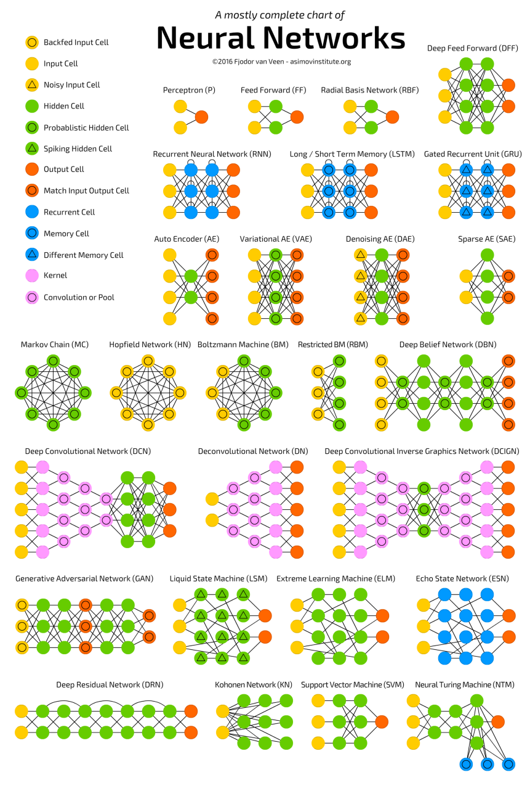
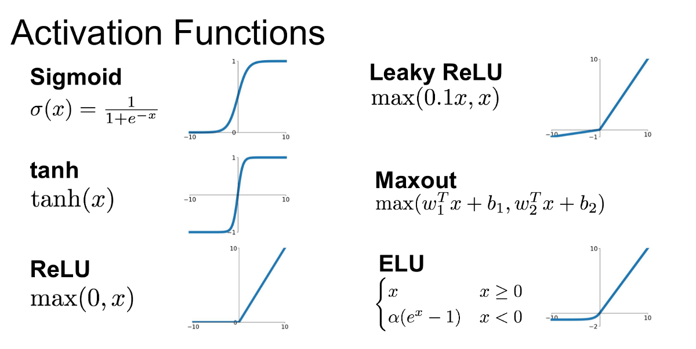

<!DOCTYPE html>


<html lang="en" >

  <head>
    <meta charset="utf-8" />
    <meta name="viewport" content="width=device-width, initial-scale=1.0" /><meta name="generator" content="Docutils 0.18.1: http://docutils.sourceforge.net/" />

    <title>Neural Networks &#8212; Introduction to Machine Learning</title>
  
  
  
  <script data-cfasync="false">
    document.documentElement.dataset.mode = localStorage.getItem("mode") || "";
    document.documentElement.dataset.theme = localStorage.getItem("theme") || "light";
  </script>
  
  <!-- Loaded before other Sphinx assets -->
  <link href="_static/styles/theme.css?digest=365ca57ee442770a23c6" rel="stylesheet" />
<link href="_static/styles/bootstrap.css?digest=365ca57ee442770a23c6" rel="stylesheet" />
<link href="_static/styles/pydata-sphinx-theme.css?digest=365ca57ee442770a23c6" rel="stylesheet" />

  
  <link href="_static/vendor/fontawesome/6.1.2/css/all.min.css?digest=365ca57ee442770a23c6" rel="stylesheet" />
  <link rel="preload" as="font" type="font/woff2" crossorigin href="_static/vendor/fontawesome/6.1.2/webfonts/fa-solid-900.woff2" />
<link rel="preload" as="font" type="font/woff2" crossorigin href="_static/vendor/fontawesome/6.1.2/webfonts/fa-brands-400.woff2" />
<link rel="preload" as="font" type="font/woff2" crossorigin href="_static/vendor/fontawesome/6.1.2/webfonts/fa-regular-400.woff2" />

    <link rel="stylesheet" type="text/css" href="_static/pygments.css" />
    <link rel="stylesheet" href="_static/styles/sphinx-book-theme.css?digest=14f4ca6b54d191a8c7657f6c759bf11a5fb86285" type="text/css" />
    <link rel="stylesheet" type="text/css" href="_static/togglebutton.css" />
    <link rel="stylesheet" type="text/css" href="_static/copybutton.css" />
    <link rel="stylesheet" type="text/css" href="_static/mystnb.4510f1fc1dee50b3e5859aac5469c37c29e427902b24a333a5f9fcb2f0b3ac41.css" />
    <link rel="stylesheet" type="text/css" href="_static/sphinx-thebe.css" />
    <link rel="stylesheet" type="text/css" href="_static/design-style.4045f2051d55cab465a707391d5b2007.min.css" />
  
  <!-- Pre-loaded scripts that we'll load fully later -->
  <link rel="preload" as="script" href="_static/scripts/bootstrap.js?digest=365ca57ee442770a23c6" />
<link rel="preload" as="script" href="_static/scripts/pydata-sphinx-theme.js?digest=365ca57ee442770a23c6" />
  <script src="_static/vendor/fontawesome/6.1.2/js/all.min.js?digest=365ca57ee442770a23c6"></script>

    <script data-url_root="./" id="documentation_options" src="_static/documentation_options.js"></script>
    <script src="_static/jquery.js"></script>
    <script src="_static/underscore.js"></script>
    <script src="_static/_sphinx_javascript_frameworks_compat.js"></script>
    <script src="_static/doctools.js"></script>
    <script src="_static/clipboard.min.js"></script>
    <script src="_static/copybutton.js"></script>
    <script src="_static/scripts/sphinx-book-theme.js?digest=5a5c038af52cf7bc1a1ec88eea08e6366ee68824"></script>
    <script>let toggleHintShow = 'Click to show';</script>
    <script>let toggleHintHide = 'Click to hide';</script>
    <script>let toggleOpenOnPrint = 'true';</script>
    <script src="_static/togglebutton.js"></script>
    <script>var togglebuttonSelector = '.toggle, .admonition.dropdown';</script>
    <script src="_static/design-tabs.js"></script>
    <script>const THEBE_JS_URL = "https://unpkg.com/thebe@0.8.2/lib/index.js"
const thebe_selector = ".thebe,.cell"
const thebe_selector_input = "pre"
const thebe_selector_output = ".output, .cell_output"
</script>
    <script async="async" src="_static/sphinx-thebe.js"></script>
    <script>DOCUMENTATION_OPTIONS.pagename = 'neural_networks';</script>
    <link rel="index" title="Index" href="genindex.html" />
    <link rel="search" title="Search" href="search.html" />
    <link rel="prev" title="PCA" href="pca.html" />
  <meta name="viewport" content="width=device-width, initial-scale=1"/>
  <meta name="docsearch:language" content="en"/>
  </head>
  
  
  <body data-bs-spy="scroll" data-bs-target=".bd-toc-nav" data-offset="180" data-bs-root-margin="0px 0px -60%" data-default-mode="">

  
  
  <a class="skip-link" href="#main-content">Skip to main content</a>
  
  <div id="pst-scroll-pixel-helper"></div>

  
  <button type="button" class="btn rounded-pill" id="pst-back-to-top">
    <i class="fa-solid fa-arrow-up"></i>
    Back to top
  </button>

  
  <input type="checkbox"
          class="sidebar-toggle"
          name="__primary"
          id="__primary"/>
  <label class="overlay overlay-primary" for="__primary"></label>
  
  <input type="checkbox"
          class="sidebar-toggle"
          name="__secondary"
          id="__secondary"/>
  <label class="overlay overlay-secondary" for="__secondary"></label>
  
  <div class="search-button__wrapper">
    <div class="search-button__overlay"></div>
    <div class="search-button__search-container">
<form class="bd-search d-flex align-items-center"
      action="search.html"
      method="get">
  <i class="fa-solid fa-magnifying-glass"></i>
  <input type="search"
         class="form-control"
         name="q"
         id="search-input"
         placeholder="Search this book..."
         aria-label="Search this book..."
         autocomplete="off"
         autocorrect="off"
         autocapitalize="off"
         spellcheck="false"/>
  <span class="search-button__kbd-shortcut"><kbd class="kbd-shortcut__modifier">Ctrl</kbd>+<kbd>K</kbd></span>
</form></div>
  </div>
  
    <nav class="bd-header navbar navbar-expand-lg bd-navbar">
    </nav>
  
  <div class="bd-container">
    <div class="bd-container__inner bd-page-width">
      
      <div class="bd-sidebar-primary bd-sidebar">
        

  
  <div class="sidebar-header-items sidebar-primary__section">
    
    
    
    
  </div>
  
    <div class="sidebar-primary-items__start sidebar-primary__section">
        <div class="sidebar-primary-item">
  

<a class="navbar-brand logo" href="intro_ml.html">
  
  
  
  
  
    
    
      
    
    
    
    <script>document.write(``);</script>
  
  
</a></div>
        <div class="sidebar-primary-item"><nav class="bd-links" id="bd-docs-nav" aria-label="Main">
    <div class="bd-toc-item navbar-nav active">
        
        <ul class="nav bd-sidenav bd-sidenav__home-link">
            <li class="toctree-l1">
                <a class="reference internal" href="intro_ml.html">
                    Introduction to Machine Learning
                </a>
            </li>
        </ul>
        <ul class="current nav bd-sidenav">
<li class="toctree-l1"><a class="reference internal" href="acknowledgement.html">Acknowledgments</a></li>
<li class="toctree-l1"><a class="reference internal" href="introduction.html">Introduction to ML</a></li>
<li class="toctree-l1 has-children"><a class="reference internal" href="supervised.html">Supervised Learning</a><input class="toctree-checkbox" id="toctree-checkbox-1" name="toctree-checkbox-1" type="checkbox"/><label class="toctree-toggle" for="toctree-checkbox-1"><i class="fa-solid fa-chevron-down"></i></label><ul>
<li class="toctree-l2"><a class="reference internal" href="knn.html">kNN</a></li>
<li class="toctree-l2"><a class="reference internal" href="linear_regression.html">Linear Regression</a></li>
<li class="toctree-l2"><a class="reference internal" href="poly_regression.html">Polynomial Regression</a></li>
<li class="toctree-l2"><a class="reference internal" href="decision_tree.html">Decision Tree</a></li>
<li class="toctree-l2"><a class="reference internal" href="random_forest.html">Random Forest</a></li>
<li class="toctree-l2"><a class="reference internal" href="xgboost.html">XGBoost</a></li>
<li class="toctree-l2"><a class="reference internal" href="logistic_regression.html">Logistic Regression</a></li>
</ul>
</li>
<li class="toctree-l1 has-children"><a class="reference internal" href="unsupervised.html">Unsupervised Learning</a><input class="toctree-checkbox" id="toctree-checkbox-2" name="toctree-checkbox-2" type="checkbox"/><label class="toctree-toggle" for="toctree-checkbox-2"><i class="fa-solid fa-chevron-down"></i></label><ul>
<li class="toctree-l2"><a class="reference internal" href="minmax.html">Scaling</a></li>
<li class="toctree-l2"><a class="reference internal" href="kmeans.html">K-means</a></li>
<li class="toctree-l2"><a class="reference internal" href="pca.html">PCA</a></li>
</ul>
</li>
<li class="toctree-l1 current active"><a class="current reference internal" href="#">Neural Networks</a></li>
</ul>

    </div>
</nav></div>
    </div>
  
  
  <div class="sidebar-primary-items__end sidebar-primary__section">
  </div>
  
  <div id="rtd-footer-container"></div>


      </div>
      
      <main id="main-content" class="bd-main">
        
        

<div class="sbt-scroll-pixel-helper"></div>

          <div class="bd-content">
            <div class="bd-article-container">
              
              <div class="bd-header-article">
<div class="header-article-items header-article__inner">
  
    <div class="header-article-items__start">
      
        <div class="header-article-item"><label class="sidebar-toggle primary-toggle btn btn-sm" for="__primary" title="Toggle primary sidebar" data-bs-placement="bottom" data-bs-toggle="tooltip">
  <span class="fa-solid fa-bars"></span>
</label></div>
      
    </div>
  
  
    <div class="header-article-items__end">
      
        <div class="header-article-item">

<div class="article-header-buttons">


<div class="dropdown dropdown-source-buttons">
  <button class="btn dropdown-toggle" type="button" data-bs-toggle="dropdown" aria-expanded="false" aria-label="Source repositories">
    <i class="fab fa-github"></i>
  </button>
  <ul class="dropdown-menu">
      
      
      
      <li><a href="https://github.com/datasmp/datasmp.github.io" target="_blank"
   class="btn btn-sm btn-source-repository-button dropdown-item"
   title="Source repository"
   data-bs-placement="left" data-bs-toggle="tooltip"
>
  

<span class="btn__icon-container">
  <i class="fab fa-github"></i>
  </span>
<span class="btn__text-container">Repository</span>
</a>
</li>
      
      
      
      
      <li><a href="https://github.com/datasmp/datasmp.github.io/issues/new?title=Issue%20on%20page%20%2Fneural_networks.html&body=Your%20issue%20content%20here." target="_blank"
   class="btn btn-sm btn-source-issues-button dropdown-item"
   title="Open an issue"
   data-bs-placement="left" data-bs-toggle="tooltip"
>
  

<span class="btn__icon-container">
  <i class="fas fa-lightbulb"></i>
  </span>
<span class="btn__text-container">Open issue</span>
</a>
</li>
      
  </ul>
</div>


<div class="dropdown dropdown-download-buttons">
  <button class="btn dropdown-toggle" type="button" data-bs-toggle="dropdown" aria-expanded="false" aria-label="Download this page">
    <i class="fas fa-download"></i>
  </button>
  <ul class="dropdown-menu">
      
      
      
      <li><a href="_sources/neural_networks.ipynb" target="_blank"
   class="btn btn-sm btn-download-source-button dropdown-item"
   title="Download source file"
   data-bs-placement="left" data-bs-toggle="tooltip"
>
  

<span class="btn__icon-container">
  <i class="fas fa-file"></i>
  </span>
<span class="btn__text-container">.ipynb</span>
</a>
</li>
      
      
      
      
      <li>
<button onclick="window.print()"
  class="btn btn-sm btn-download-pdf-button dropdown-item"
  title="Print to PDF"
  data-bs-placement="left" data-bs-toggle="tooltip"
>
  

<span class="btn__icon-container">
  <i class="fas fa-file-pdf"></i>
  </span>
<span class="btn__text-container">.pdf</span>
</button>
</li>
      
  </ul>
</div>


<button onclick="toggleFullScreen()"
  class="btn btn-sm btn-fullscreen-button"
  title="Fullscreen mode"
  data-bs-placement="bottom" data-bs-toggle="tooltip"
>
  

<span class="btn__icon-container">
  <i class="fas fa-expand"></i>
  </span>

</button>


<script>
document.write(`
  <button class="btn btn-sm navbar-btn theme-switch-button" title="light/dark" aria-label="light/dark" data-bs-placement="bottom" data-bs-toggle="tooltip">
    <span class="theme-switch nav-link" data-mode="light"><i class="fa-solid fa-sun fa-lg"></i></span>
    <span class="theme-switch nav-link" data-mode="dark"><i class="fa-solid fa-moon fa-lg"></i></span>
    <span class="theme-switch nav-link" data-mode="auto"><i class="fa-solid fa-circle-half-stroke fa-lg"></i></span>
  </button>
`);
</script>

<script>
document.write(`
  <button class="btn btn-sm navbar-btn search-button search-button__button" title="Search" aria-label="Search" data-bs-placement="bottom" data-bs-toggle="tooltip">
    <i class="fa-solid fa-magnifying-glass fa-lg"></i>
  </button>
`);
</script>
<label class="sidebar-toggle secondary-toggle btn btn-sm" for="__secondary"title="Toggle secondary sidebar" data-bs-placement="bottom" data-bs-toggle="tooltip">
    <span class="fa-solid fa-list"></span>
</label>
</div></div>
      
    </div>
  
</div>
</div>
              
              

<div id="jb-print-docs-body" class="onlyprint">
    <h1>Neural Networks</h1>
    <!-- Table of contents -->
    <div id="print-main-content">
        <div id="jb-print-toc">
            
            <div>
                <h2> Contents </h2>
            </div>
            <nav aria-label="Page">
                <ul class="visible nav section-nav flex-column">
<li class="toc-h2 nav-item toc-entry"><a class="reference internal nav-link" href="#perceptron">Perceptron</a></li>
<li class="toc-h2 nav-item toc-entry"><a class="reference internal nav-link" href="#multilayer-perceptron-mlp">Multilayer Perceptron (MLP)</a></li>
<li class="toc-h2 nav-item toc-entry"><a class="reference internal nav-link" href="#activation-functions">Activation Functions</a></li>
<li class="toc-h2 nav-item toc-entry"><a class="reference internal nav-link" href="#sklearn-perceptron">sklearn Perceptron</a></li>
<li class="toc-h2 nav-item toc-entry"><a class="reference internal nav-link" href="#sklearn-mlp-classifier">sklearn MLP Classifier</a></li>
<li class="toc-h2 nav-item toc-entry"><a class="reference internal nav-link" href="#sklearn-mlp-regressor">sklearn MLP Regressor</a></li>
<li class="toc-h2 nav-item toc-entry"><a class="reference internal nav-link" href="#tensorflow">Tensorflow</a></li>
<li class="toc-h2 nav-item toc-entry"><a class="reference internal nav-link" href="#keras">Keras</a><ul class="nav section-nav flex-column">
<li class="toc-h3 nav-item toc-entry"><a class="reference internal nav-link" href="#binary-classification">Binary classification</a></li>
<li class="toc-h3 nav-item toc-entry"><a class="reference internal nav-link" href="#regression">Regression</a></li>
<li class="toc-h3 nav-item toc-entry"><a class="reference internal nav-link" href="#multiclass">Multiclass</a></li>
</ul>
</li>
</ul>
            </nav>
        </div>
    </div>
</div>

              
                
<div id="searchbox"></div>
                <article class="bd-article" role="main">
                  
  <section class="tex2jax_ignore mathjax_ignore" id="neural-networks">
<h1>Neural Networks<a class="headerlink" href="#neural-networks" title="Permalink to this heading">#</a></h1>
<p></p>
<p>Neural Networks (NN) are a subset of Machine Learning (ML) that function similarly to the human brain’s neural networks.</p>
<ul class="simple">
<li><p>At the core of this structure is the perceptron, a mathematical representation of a biological neuron.</p></li>
<li><p>Similar to the cerebral cortex, a neural network can have multiple layers of interconnected perceptrons.</p></li>
<li><p>Input values, or underlying data, pass through these “hidden layers” until they converge at the output layer.</p></li>
<li><p>The output layer provides the final prediction, which could be a single node if the model outputs a number or multiple nodes in the case of a multiclass classification problem.</p></li>
<li><p>The hidden layers in a NN perform transformations on the data to discern its relationship with the target variable.</p></li>
<li><p>Each node in the network is assigned a weight, which multiplies the input value.</p></li>
<li><p>As data passes through several layers, the network effectively transforms the data into something meaningful.</p></li>
<li><p>The process of determining the optimal weights for these nodes is typically achieved using an algorithm called Backpropagation.</p></li>
</ul>
<p><strong>History:</strong> The development of this field began around 1940, followed by a pause in progress around 1960.</p>
<ul class="simple">
<li><p>It resumed in the 1980s but encountered another break in the 1990s.</p></li>
<li><p>A significant resurgence occurred in the 2010s, driven by substantial improvements in</p>
<ul>
<li><p>data availability</p></li>
<li><p>computational power (especially with the advent of GPU cards)</p></li>
<li><p>advancements in theoretical frameworks.</p></li>
</ul>
</li>
</ul>
<p><strong>Application:</strong> Some notable applications of neural networks include</p>
<ul class="simple">
<li><p>autonomous vehicles, which rely on these models for navigation and decision-making</p></li>
<li><p>real-time translation systems that enable instant language conversion</p></li>
<li><p>Google’s Deep Learning-based AlphaGo, which famously defeated the world’s top Go player.</p></li>
</ul>
<p><strong>Examples:</strong> There are many different neural network (NN) structures that have been developed, some of which are highly complex and designed to handle intricate datasets such as images and language translation. Below are a few examples:</p>
<p></p>
<section id="perceptron">
<h2>Perceptron<a class="headerlink" href="#perceptron" title="Permalink to this heading">#</a></h2>
<p>A <a class="reference external" href="https://scikit-learn.org/stable/modules/generated/sklearn.linear_model.Perceptron.html#sklearn.linear_model">perceptron</a> is an algorithm used for supervised learning of binary classifiers.</p>
<ul class="simple">
<li><p>It is essentially a single-layer neural network (an artificial neuron) that performs computations to identify features or extract business intelligence from input data.</p></li>
</ul>
<p>The perceptron algorithm learns the weights for the input signals to draw a linear decision boundary. It consists of four main components:</p>
<ul class="simple">
<li><p>Input values</p></li>
<li><p>Weights and bias</p></li>
<li><p>Net sum</p></li>
<li><p>Activation function</p></li>
</ul>
<p><strong>How does a perceptron work?</strong></p>
<ul class="simple">
<li><p>The process begins by multiplying each input value by its corresponding weight.</p></li>
<li><p>These multiplied values are then summed to create the weighted sum.</p></li>
<li><p>The weighted sum is passed through the activation function, which produces the perceptron’s output.</p></li>
<li><p>The activation function is crucial as it maps the output to the desired range of values.</p></li>
<li><p>The weight of an input reflects the strength or influence of that particular node in the network.</p></li>
</ul>
<p></p>
</section>
<section id="multilayer-perceptron-mlp">
<h2>Multilayer Perceptron (MLP)<a class="headerlink" href="#multilayer-perceptron-mlp" title="Permalink to this heading">#</a></h2>
<ul class="simple">
<li><p>A perceptron is always a feedforward network, meaning that all connections flow in the direction of the output.</p></li>
<li><p>In contrast, some neural networks can have loops, and these are known as recurrent networks. Recurrent networks are generally more challenging to train compared to feedforward networks.</p></li>
<li><p>An artificial neural network that consists of an input layer, an output layer, and two or more hidden layers of perceptrons is called a <strong>Multilayer Perceptron (MLP)</strong>.</p></li>
<li><p>These hidden layers contain trainable weights and are crucial for capturing complex patterns in the data.</p></li>
</ul>
<ul class="simple">
<li><p><strong>Lower Layers</strong>: Layers that are closer to the input layer.</p></li>
<li><p><strong>Upper Layers</strong>: Layers that are closer to the output layer.</p></li>
<li><p><strong>Input Layer</strong>: Receives the data as input to build the neural network.</p></li>
<li><p><strong>Hidden Layers</strong>: Perform complex operations and feature extraction.</p>
<ul>
<li><p><strong>Lower-Level Hidden Layers</strong>: Detect low-level structures, such as line segments and orientations.</p></li>
<li><p><strong>Middle-Level Hidden Layers</strong>: Capture intermediate-level structures, like rectangles and circles.</p></li>
<li><p><strong>Upper-Level Hidden Layers</strong>: Recognize complex structures, such as faces.</p></li>
</ul>
</li>
<li><p><strong>Output Layer</strong>: Generates the predicted value(s).</p></li>
</ul>
<p></p>
<p></p>
</section>
<section id="activation-functions">
<h2>Activation Functions<a class="headerlink" href="#activation-functions" title="Permalink to this heading">#</a></h2>
<ul class="simple">
<li><p>Activation functions are crucial for introducing non-linearity into neural networks, allowing them to model complex relationships.</p></li>
<li><p>They also convert the network’s output into a desired range, facilitating various tasks and interpretations.</p></li>
<li><p>The activation function of perceptron applies a step rule that converts the numerical output into either +1 or -1, determining whether the output of the weighting function is greater than zero.</p></li>
<li><p>The derivative of the step function is zero, which limits its usefulness in some applications.</p></li>
<li><p>The derivative of the ReLU (Rectified Linear Unit) function, however, is easy and fast to compute, making ReLU the default activation function for hidden layers in many neural networks.</p></li>
<li><p>Some of the most commonly used activation functions include:</p></li>
</ul>
<p></p>
</section>
<section id="sklearn-perceptron">
<h2>sklearn Perceptron<a class="headerlink" href="#sklearn-perceptron" title="Permalink to this heading">#</a></h2>
<p>The sklearn implementation of the Perceptron is designed exclusively for binary classification tasks.</p>
<div class="cell docutils container">
<div class="cell_input docutils container">
<div class="highlight-ipython3 notranslate"><div class="highlight"><pre><span></span><span class="kn">from</span> <span class="nn">sklearn.datasets</span> <span class="kn">import</span> <span class="n">load_breast_cancer</span>
<span class="kn">from</span> <span class="nn">sklearn.model_selection</span> <span class="kn">import</span> <span class="n">train_test_split</span>

<span class="n">X</span> <span class="o">=</span> <span class="n">load_breast_cancer</span><span class="p">()</span><span class="o">.</span><span class="n">data</span>
<span class="n">y</span> <span class="o">=</span> <span class="n">load_breast_cancer</span><span class="p">()</span><span class="o">.</span><span class="n">target</span>

<span class="n">X_train</span><span class="p">,</span> <span class="n">X_test</span><span class="p">,</span> <span class="n">y_train</span><span class="p">,</span> <span class="n">y_test</span> <span class="o">=</span> <span class="n">train_test_split</span><span class="p">(</span><span class="n">X</span><span class="p">,</span><span class="n">y</span><span class="p">,</span><span class="n">random_state</span><span class="o">=</span><span class="mi">0</span><span class="p">)</span>
</pre></div>
</div>
</div>
</div>
<div class="cell docutils container">
<div class="cell_input docutils container">
<div class="highlight-ipython3 notranslate"><div class="highlight"><pre><span></span><span class="kn">from</span> <span class="nn">sklearn.linear_model</span> <span class="kn">import</span> <span class="n">Perceptron</span>
<span class="n">clf</span> <span class="o">=</span> <span class="n">Perceptron</span><span class="p">(</span><span class="n">random_state</span><span class="o">=</span><span class="mi">0</span><span class="p">)</span>
<span class="n">clf</span><span class="o">.</span><span class="n">fit</span><span class="p">(</span><span class="n">X_train</span><span class="p">,</span> <span class="n">y_train</span><span class="p">)</span>
<span class="n">clf</span><span class="o">.</span><span class="n">score</span><span class="p">(</span><span class="n">X_train</span><span class="p">,</span> <span class="n">y_train</span><span class="p">),</span> <span class="n">clf</span><span class="o">.</span><span class="n">score</span><span class="p">(</span><span class="n">X_test</span><span class="p">,</span> <span class="n">y_test</span><span class="p">)</span>
</pre></div>
</div>
</div>
<div class="cell_output docutils container">
<div class="output text_plain highlight-myst-ansi notranslate"><div class="highlight"><pre><span></span>(0.8497652582159625, 0.8531468531468531)
</pre></div>
</div>
</div>
</div>
<div class="cell docutils container">
<div class="cell_input docutils container">
<div class="highlight-ipython3 notranslate"><div class="highlight"><pre><span></span><span class="n">clf</span><span class="o">.</span><span class="n">intercept_</span>
</pre></div>
</div>
</div>
<div class="cell_output docutils container">
<div class="output text_plain highlight-myst-ansi notranslate"><div class="highlight"><pre><span></span>array([253.])
</pre></div>
</div>
</div>
</div>
<div class="cell docutils container">
<div class="cell_input docutils container">
<div class="highlight-ipython3 notranslate"><div class="highlight"><pre><span></span><span class="n">clf</span><span class="o">.</span><span class="n">coef_</span><span class="o">.</span><span class="n">shape</span>
</pre></div>
</div>
</div>
<div class="cell_output docutils container">
<div class="output text_plain highlight-myst-ansi notranslate"><div class="highlight"><pre><span></span>(1, 30)
</pre></div>
</div>
</div>
</div>
<div class="cell docutils container">
<div class="cell_input docutils container">
<div class="highlight-ipython3 notranslate"><div class="highlight"><pre><span></span><span class="c1"># actual output</span>
<span class="n">y_test</span><span class="p">[:</span><span class="mi">5</span><span class="p">]</span>
</pre></div>
</div>
</div>
<div class="cell_output docutils container">
<div class="output text_plain highlight-myst-ansi notranslate"><div class="highlight"><pre><span></span>array([0, 1, 1, 1, 1])
</pre></div>
</div>
</div>
</div>
<div class="cell docutils container">
<div class="cell_input docutils container">
<div class="highlight-ipython3 notranslate"><div class="highlight"><pre><span></span><span class="c1"># predicted classes</span>
<span class="n">clf</span><span class="o">.</span><span class="n">predict</span><span class="p">(</span><span class="n">X_test</span><span class="p">[:</span><span class="mi">5</span><span class="p">])</span>
</pre></div>
</div>
</div>
<div class="cell_output docutils container">
<div class="output text_plain highlight-myst-ansi notranslate"><div class="highlight"><pre><span></span>array([1, 1, 1, 1, 1])
</pre></div>
</div>
</div>
</div>
<div class="cell docutils container">
<div class="cell_input docutils container">
<div class="highlight-ipython3 notranslate"><div class="highlight"><pre><span></span><span class="n">clf</span><span class="o">.</span><span class="n">score</span><span class="p">(</span><span class="n">X_train</span><span class="p">,</span> <span class="n">y_train</span><span class="p">)</span>
</pre></div>
</div>
</div>
<div class="cell_output docutils container">
<div class="output text_plain highlight-myst-ansi notranslate"><div class="highlight"><pre><span></span>0.8497652582159625
</pre></div>
</div>
</div>
</div>
<div class="cell docutils container">
<div class="cell_input docutils container">
<div class="highlight-ipython3 notranslate"><div class="highlight"><pre><span></span><span class="n">clf</span><span class="o">.</span><span class="n">score</span><span class="p">(</span><span class="n">X_test</span><span class="p">,</span> <span class="n">y_test</span><span class="p">)</span>
</pre></div>
</div>
</div>
<div class="cell_output docutils container">
<div class="output text_plain highlight-myst-ansi notranslate"><div class="highlight"><pre><span></span>0.8531468531468531
</pre></div>
</div>
</div>
</div>
</section>
<section id="sklearn-mlp-classifier">
<h2>sklearn MLP Classifier<a class="headerlink" href="#sklearn-mlp-classifier" title="Permalink to this heading">#</a></h2>
<div class="cell docutils container">
<div class="cell_input docutils container">
<div class="highlight-ipython3 notranslate"><div class="highlight"><pre><span></span><span class="kn">from</span> <span class="nn">sklearn.neural_network</span> <span class="kn">import</span> <span class="n">MLPClassifier</span>
<span class="n">clf</span> <span class="o">=</span> <span class="n">MLPClassifier</span><span class="p">(</span><span class="n">random_state</span><span class="o">=</span><span class="mi">0</span><span class="p">,</span> <span class="n">hidden_layer_sizes</span><span class="o">=</span><span class="p">[</span><span class="mi">10</span><span class="p">,</span><span class="mi">20</span><span class="p">],</span> <span class="n">activation</span><span class="o">=</span><span class="s1">&#39;relu&#39;</span><span class="p">,</span> <span class="n">max_iter</span><span class="o">=</span><span class="mi">1000</span><span class="p">,</span> <span class="n">verbose</span><span class="o">=</span><span class="kc">True</span><span class="p">)</span>
<span class="n">clf</span><span class="o">.</span><span class="n">fit</span><span class="p">(</span><span class="n">X_train</span><span class="p">,</span> <span class="n">y_train</span><span class="p">)</span>
<span class="n">clf</span><span class="o">.</span><span class="n">score</span><span class="p">(</span><span class="n">X_train</span><span class="p">,</span> <span class="n">y_train</span><span class="p">),</span> <span class="n">clf</span><span class="o">.</span><span class="n">score</span><span class="p">(</span><span class="n">X_test</span><span class="p">,</span> <span class="n">y_test</span><span class="p">)</span>
</pre></div>
</div>
</div>
<div class="cell_output docutils container">
<div class="output stream highlight-myst-ansi notranslate"><div class="highlight"><pre><span></span>Iteration 1, loss = 16.48366333
Iteration 2, loss = 12.81163261
Iteration 3, loss = 9.38188348
Iteration 4, loss = 6.15284159
Iteration 5, loss = 3.06556933
Iteration 6, loss = 1.79209303
Iteration 7, loss = 3.17472712
Iteration 8, loss = 3.08159243
Iteration 9, loss = 1.92127815
Iteration 10, loss = 1.13278810
Iteration 11, loss = 1.46585057
Iteration 12, loss = 1.39154017
Iteration 13, loss = 0.92836057
Iteration 14, loss = 0.78011923
Iteration 15, loss = 0.83217703
Iteration 16, loss = 0.61431221
Iteration 17, loss = 0.56937143
Iteration 18, loss = 0.56185809
Iteration 19, loss = 0.47847936
Iteration 20, loss = 0.44624358
Iteration 21, loss = 0.44303375
Iteration 22, loss = 0.41074560
Iteration 23, loss = 0.39071021
Iteration 24, loss = 0.39527286
Iteration 25, loss = 0.37482045
Iteration 26, loss = 0.36508208
Iteration 27, loss = 0.36345044
Iteration 28, loss = 0.34420751
Iteration 29, loss = 0.35248542
Iteration 30, loss = 0.35820652
Iteration 31, loss = 0.33047450
Iteration 32, loss = 0.32809274
Iteration 33, loss = 0.33135073
Iteration 34, loss = 0.31658450
Iteration 35, loss = 0.30966815
Iteration 36, loss = 0.31942464
Iteration 37, loss = 0.30854938
Iteration 38, loss = 0.29585009
Iteration 39, loss = 0.30295961
Iteration 40, loss = 0.29983246
Iteration 41, loss = 0.28709714
Iteration 42, loss = 0.29224021
Iteration 43, loss = 0.29280316
Iteration 44, loss = 0.28575912
Iteration 45, loss = 0.27984300
Iteration 46, loss = 0.27572029
Iteration 47, loss = 0.27650301
Iteration 48, loss = 0.27705311
Iteration 49, loss = 0.27238059
Iteration 50, loss = 0.26795715
Iteration 51, loss = 0.26710265
Iteration 52, loss = 0.26566778
Iteration 53, loss = 0.26244564
Iteration 54, loss = 0.25973070
Iteration 55, loss = 0.25797436
Iteration 56, loss = 0.25627265
Iteration 57, loss = 0.26035768
Iteration 58, loss = 0.25627474
Iteration 59, loss = 0.25119117
Iteration 60, loss = 0.26167088
Iteration 61, loss = 0.25440192
Iteration 62, loss = 0.24775587
Iteration 63, loss = 0.24523190
Iteration 64, loss = 0.24275218
Iteration 65, loss = 0.24167241
Iteration 66, loss = 0.24242831
Iteration 67, loss = 0.23827775
Iteration 68, loss = 0.24398645
Iteration 69, loss = 0.24202910
Iteration 70, loss = 0.23572109
Iteration 71, loss = 0.23727039
Iteration 72, loss = 0.23337936
Iteration 73, loss = 0.23346875
Iteration 74, loss = 0.23899500
Iteration 75, loss = 0.23339510
Iteration 76, loss = 0.22764237
Iteration 77, loss = 0.22792822
Iteration 78, loss = 0.22632397
Iteration 79, loss = 0.22439054
Iteration 80, loss = 0.23286673
Iteration 81, loss = 0.22896344
Iteration 82, loss = 0.22125347
Iteration 83, loss = 0.23183654
Iteration 84, loss = 0.22694347
Iteration 85, loss = 0.21848633
Iteration 86, loss = 0.22199444
Iteration 87, loss = 0.21896390
Iteration 88, loss = 0.21821757
Iteration 89, loss = 0.21905151
Iteration 90, loss = 0.21624154
Iteration 91, loss = 0.21536296
Iteration 92, loss = 0.21462701
Iteration 93, loss = 0.21469123
Iteration 94, loss = 0.21447660
Iteration 95, loss = 0.21302403
Iteration 96, loss = 0.21229424
Iteration 97, loss = 0.21648274
Iteration 98, loss = 0.21629050
Iteration 99, loss = 0.21052837
Iteration 100, loss = 0.21421364
Iteration 101, loss = 0.21446421
Iteration 102, loss = 0.20951278
Iteration 103, loss = 0.20624030
Iteration 104, loss = 0.20192669
Iteration 105, loss = 0.21262530
Iteration 106, loss = 0.21059451
Iteration 107, loss = 0.21493775
Iteration 108, loss = 0.21247457
Iteration 109, loss = 0.20827266
Iteration 110, loss = 0.20797401
Iteration 111, loss = 0.20133312
Iteration 112, loss = 0.20384934
Iteration 113, loss = 0.20201144
Iteration 114, loss = 0.20074490
Iteration 115, loss = 0.20184496
Iteration 116, loss = 0.19870551
Iteration 117, loss = 0.19868175
Iteration 118, loss = 0.19710613
Iteration 119, loss = 0.20023168
Iteration 120, loss = 0.20204670
Iteration 121, loss = 0.19841706
Iteration 122, loss = 0.20835956
Iteration 123, loss = 0.20492477
Iteration 124, loss = 0.19585607
Iteration 125, loss = 0.19476145
Iteration 126, loss = 0.19599598
Iteration 127, loss = 0.19738285
Iteration 128, loss = 0.19462320
Iteration 129, loss = 0.19506457
Iteration 130, loss = 0.19915867
Iteration 131, loss = 0.19156462
Iteration 132, loss = 0.19539969
Iteration 133, loss = 0.19634843
Iteration 134, loss = 0.19588670
Iteration 135, loss = 0.20413956
Iteration 136, loss = 0.19834956
Iteration 137, loss = 0.19123766
Iteration 138, loss = 0.19483105
Iteration 139, loss = 0.19387671
Iteration 140, loss = 0.19259078
Iteration 141, loss = 0.19223833
Iteration 142, loss = 0.18983270
Iteration 143, loss = 0.18933797
Iteration 144, loss = 0.19138847
Iteration 145, loss = 0.19166472
Iteration 146, loss = 0.18864295
Iteration 147, loss = 0.18947084
Iteration 148, loss = 0.19269943
Iteration 149, loss = 0.18982741
Iteration 150, loss = 0.18771516
Iteration 151, loss = 0.18809080
Iteration 152, loss = 0.18868524
Iteration 153, loss = 0.18643025
Iteration 154, loss = 0.18793776
Iteration 155, loss = 0.18796948
Iteration 156, loss = 0.18672493
Iteration 157, loss = 0.18804210
Iteration 158, loss = 0.19320248
Iteration 159, loss = 0.18657739
Iteration 160, loss = 0.18376431
Iteration 161, loss = 0.18392296
Iteration 162, loss = 0.18839966
Iteration 163, loss = 0.18637709
Iteration 164, loss = 0.18340676
Iteration 165, loss = 0.18405448
Iteration 166, loss = 0.18144590
Iteration 167, loss = 0.18537356
Iteration 168, loss = 0.18235561
Iteration 169, loss = 0.18115791
Iteration 170, loss = 0.18049243
Iteration 171, loss = 0.19164347
Iteration 172, loss = 0.18817268
Iteration 173, loss = 0.18164340
Iteration 174, loss = 0.18231547
Iteration 175, loss = 0.18247379
Iteration 176, loss = 0.18297624
Iteration 177, loss = 0.18000340
Iteration 178, loss = 0.17792030
Iteration 179, loss = 0.17749439
Iteration 180, loss = 0.17690899
Iteration 181, loss = 0.17636246
Iteration 182, loss = 0.18374646
Iteration 183, loss = 0.17832486
Iteration 184, loss = 0.18365293
Iteration 185, loss = 0.17856427
Iteration 186, loss = 0.17180006
Iteration 187, loss = 0.17422329
Iteration 188, loss = 0.17642624
Iteration 189, loss = 0.18214418
Iteration 190, loss = 0.17378842
Iteration 191, loss = 0.17172324
Iteration 192, loss = 0.17496818
Iteration 193, loss = 0.17304721
Iteration 194, loss = 0.17511399
Iteration 195, loss = 0.17253638
Iteration 196, loss = 0.17902043
Iteration 197, loss = 0.17125700
Iteration 198, loss = 0.17631683
Iteration 199, loss = 0.17193380
Iteration 200, loss = 0.17034735
Iteration 201, loss = 0.17172892
Iteration 202, loss = 0.16704877
Iteration 203, loss = 0.16867013
Iteration 204, loss = 0.17092232
Iteration 205, loss = 0.16752118
Iteration 206, loss = 0.16417433
Iteration 207, loss = 0.16560926
Iteration 208, loss = 0.17149535
Iteration 209, loss = 0.17522727
Iteration 210, loss = 0.16526745
Iteration 211, loss = 0.16374203
Iteration 212, loss = 0.16300556
Iteration 213, loss = 0.16167173
Iteration 214, loss = 0.16248504
Iteration 215, loss = 0.16371142
Iteration 216, loss = 0.16203008
Iteration 217, loss = 0.16724511
Iteration 218, loss = 0.16135085
Iteration 219, loss = 0.17389288
Iteration 220, loss = 0.17035218
Iteration 221, loss = 0.17628162
Iteration 222, loss = 0.16054739
Iteration 223, loss = 0.16880219
Iteration 224, loss = 0.17565170
Iteration 225, loss = 0.16507134
Iteration 226, loss = 0.17451813
Iteration 227, loss = 0.17056154
Iteration 228, loss = 0.17301608
Iteration 229, loss = 0.17051196
Iteration 230, loss = 0.16668122
Iteration 231, loss = 0.16029997
Iteration 232, loss = 0.16629220
Iteration 233, loss = 0.16676703
Iteration 234, loss = 0.16736844
Iteration 235, loss = 0.17426554
Iteration 236, loss = 0.16744307
Iteration 237, loss = 0.16491206
Iteration 238, loss = 0.16478061
Iteration 239, loss = 0.15547292
Iteration 240, loss = 0.17035368
Iteration 241, loss = 0.16562166
Iteration 242, loss = 0.16326092
Iteration 243, loss = 0.15869094
Iteration 244, loss = 0.15821124
Iteration 245, loss = 0.15700092
Iteration 246, loss = 0.15862788
Iteration 247, loss = 0.15296610
Iteration 248, loss = 0.16287110
Iteration 249, loss = 0.15694248
Iteration 250, loss = 0.15857328
Iteration 251, loss = 0.15849296
Iteration 252, loss = 0.15297230
Iteration 253, loss = 0.15222974
Iteration 254, loss = 0.15356640
Iteration 255, loss = 0.15494507
Iteration 256, loss = 0.15569062
Iteration 257, loss = 0.15171184
Iteration 258, loss = 0.15147845
Iteration 259, loss = 0.15576388
Iteration 260, loss = 0.15798620
Iteration 261, loss = 0.17893863
Iteration 262, loss = 0.16553017
Iteration 263, loss = 0.15408385
Iteration 264, loss = 0.15127454
Iteration 265, loss = 0.15195088
Iteration 266, loss = 0.16409095
Iteration 267, loss = 0.15138270
Iteration 268, loss = 0.15846986
Iteration 269, loss = 0.15182922
Iteration 270, loss = 0.15035451
Iteration 271, loss = 0.14948154
Iteration 272, loss = 0.14941659
Iteration 273, loss = 0.15032517
Iteration 274, loss = 0.14903610
Iteration 275, loss = 0.15271764
Iteration 276, loss = 0.15103971
Iteration 277, loss = 0.15617733
Iteration 278, loss = 0.14783741
Iteration 279, loss = 0.15065138
Iteration 280, loss = 0.14969282
Iteration 281, loss = 0.14763248
Iteration 282, loss = 0.15189719
Iteration 283, loss = 0.15060460
Iteration 284, loss = 0.14922063
Iteration 285, loss = 0.14919481
Iteration 286, loss = 0.15226311
Iteration 287, loss = 0.15100809
Iteration 288, loss = 0.15163340
Iteration 289, loss = 0.15047148
Iteration 290, loss = 0.15687841
Iteration 291, loss = 0.14531137
Iteration 292, loss = 0.14673614
Iteration 293, loss = 0.14824440
Iteration 294, loss = 0.14748072
Iteration 295, loss = 0.14680663
Iteration 296, loss = 0.14665397
Iteration 297, loss = 0.14508099
Iteration 298, loss = 0.14577647
Iteration 299, loss = 0.14373049
Iteration 300, loss = 0.14457878
Iteration 301, loss = 0.14374740
Iteration 302, loss = 0.14498286
Iteration 303, loss = 0.14385636
Iteration 304, loss = 0.15194713
Iteration 305, loss = 0.14832022
Iteration 306, loss = 0.15762867
Iteration 307, loss = 0.14536009
Iteration 308, loss = 0.15134841
Iteration 309, loss = 0.14521824
Iteration 310, loss = 0.14210533
Iteration 311, loss = 0.15498353
Iteration 312, loss = 0.15618515
Iteration 313, loss = 0.14091871
Iteration 314, loss = 0.15249876
Iteration 315, loss = 0.14219143
Iteration 316, loss = 0.16047939
Iteration 317, loss = 0.14719331
Iteration 318, loss = 0.15271462
Iteration 319, loss = 0.14382279
Iteration 320, loss = 0.15290170
Iteration 321, loss = 0.14422318
Iteration 322, loss = 0.16657156
Iteration 323, loss = 0.15165789
Iteration 324, loss = 0.14354466
Training loss did not improve more than tol=0.000100 for 10 consecutive epochs. Stopping.
</pre></div>
</div>
<div class="output text_plain highlight-myst-ansi notranslate"><div class="highlight"><pre><span></span>(0.9460093896713615, 0.9300699300699301)
</pre></div>
</div>
</div>
</div>
<div class="cell docutils container">
<div class="cell_input docutils container">
<div class="highlight-ipython3 notranslate"><div class="highlight"><pre><span></span><span class="nb">len</span><span class="p">(</span><span class="n">clf</span><span class="o">.</span><span class="n">coefs_</span><span class="p">)</span>
</pre></div>
</div>
</div>
<div class="cell_output docutils container">
<div class="output text_plain highlight-myst-ansi notranslate"><div class="highlight"><pre><span></span>3
</pre></div>
</div>
</div>
</div>
<div class="cell docutils container">
<div class="cell_input docutils container">
<div class="highlight-ipython3 notranslate"><div class="highlight"><pre><span></span><span class="n">clf</span><span class="o">.</span><span class="n">coefs_</span><span class="p">[</span><span class="mi">0</span><span class="p">]</span><span class="o">.</span><span class="n">shape</span>
</pre></div>
</div>
</div>
<div class="cell_output docutils container">
<div class="output text_plain highlight-myst-ansi notranslate"><div class="highlight"><pre><span></span>(30, 10)
</pre></div>
</div>
</div>
</div>
<div class="cell docutils container">
<div class="cell_input docutils container">
<div class="highlight-ipython3 notranslate"><div class="highlight"><pre><span></span><span class="n">clf</span><span class="o">.</span><span class="n">coefs_</span><span class="p">[</span><span class="mi">1</span><span class="p">]</span><span class="o">.</span><span class="n">shape</span>
</pre></div>
</div>
</div>
<div class="cell_output docutils container">
<div class="output text_plain highlight-myst-ansi notranslate"><div class="highlight"><pre><span></span>(10, 20)
</pre></div>
</div>
</div>
</div>
<div class="cell docutils container">
<div class="cell_input docutils container">
<div class="highlight-ipython3 notranslate"><div class="highlight"><pre><span></span><span class="n">clf</span><span class="o">.</span><span class="n">coefs_</span><span class="p">[</span><span class="mi">2</span><span class="p">]</span><span class="o">.</span><span class="n">shape</span>
</pre></div>
</div>
</div>
<div class="cell_output docutils container">
<div class="output text_plain highlight-myst-ansi notranslate"><div class="highlight"><pre><span></span>(20, 1)
</pre></div>
</div>
</div>
</div>
<div class="cell docutils container">
<div class="cell_input docutils container">
<div class="highlight-ipython3 notranslate"><div class="highlight"><pre><span></span><span class="p">[</span><span class="n">i</span><span class="o">.</span><span class="n">shape</span> <span class="k">for</span> <span class="n">i</span> <span class="ow">in</span> <span class="n">clf</span><span class="o">.</span><span class="n">coefs_</span><span class="p">]</span>
</pre></div>
</div>
</div>
<div class="cell_output docutils container">
<div class="output text_plain highlight-myst-ansi notranslate"><div class="highlight"><pre><span></span>[(30, 10), (10, 20), (20, 1)]
</pre></div>
</div>
</div>
</div>
<div class="cell docutils container">
<div class="cell_input docutils container">
<div class="highlight-ipython3 notranslate"><div class="highlight"><pre><span></span><span class="nb">len</span><span class="p">(</span><span class="n">clf</span><span class="o">.</span><span class="n">intercepts_</span><span class="p">),</span> <span class="n">clf</span><span class="o">.</span><span class="n">intercepts_</span><span class="p">[</span><span class="mi">0</span><span class="p">]</span><span class="o">.</span><span class="n">shape</span><span class="p">,</span> <span class="n">clf</span><span class="o">.</span><span class="n">intercepts_</span><span class="p">[</span><span class="mi">1</span><span class="p">]</span><span class="o">.</span><span class="n">shape</span>
</pre></div>
</div>
</div>
<div class="cell_output docutils container">
<div class="output text_plain highlight-myst-ansi notranslate"><div class="highlight"><pre><span></span>(3, (10,), (20,))
</pre></div>
</div>
</div>
</div>
<div class="cell docutils container">
<div class="cell_input docutils container">
<div class="highlight-ipython3 notranslate"><div class="highlight"><pre><span></span><span class="nb">len</span><span class="p">(</span><span class="n">clf</span><span class="o">.</span><span class="n">coefs_</span><span class="p">),</span> <span class="n">clf</span><span class="o">.</span><span class="n">coefs_</span><span class="p">[</span><span class="mi">0</span><span class="p">]</span><span class="o">.</span><span class="n">shape</span><span class="p">,</span> <span class="n">clf</span><span class="o">.</span><span class="n">coefs_</span><span class="p">[</span><span class="mi">1</span><span class="p">]</span><span class="o">.</span><span class="n">shape</span>
</pre></div>
</div>
</div>
<div class="cell_output docutils container">
<div class="output text_plain highlight-myst-ansi notranslate"><div class="highlight"><pre><span></span>(3, (30, 10), (10, 20))
</pre></div>
</div>
</div>
</div>
<div class="cell docutils container">
<div class="cell_input docutils container">
<div class="highlight-ipython3 notranslate"><div class="highlight"><pre><span></span><span class="n">clf</span><span class="o">.</span><span class="n">get_params</span><span class="p">()</span>
</pre></div>
</div>
</div>
<div class="cell_output docutils container">
<div class="output text_plain highlight-myst-ansi notranslate"><div class="highlight"><pre><span></span>{&#39;activation&#39;: &#39;relu&#39;,
 &#39;alpha&#39;: 0.0001,
 &#39;batch_size&#39;: &#39;auto&#39;,
 &#39;beta_1&#39;: 0.9,
 &#39;beta_2&#39;: 0.999,
 &#39;early_stopping&#39;: False,
 &#39;epsilon&#39;: 1e-08,
 &#39;hidden_layer_sizes&#39;: [10, 20],
 &#39;learning_rate&#39;: &#39;constant&#39;,
 &#39;learning_rate_init&#39;: 0.001,
 &#39;max_fun&#39;: 15000,
 &#39;max_iter&#39;: 1000,
 &#39;momentum&#39;: 0.9,
 &#39;n_iter_no_change&#39;: 10,
 &#39;nesterovs_momentum&#39;: True,
 &#39;power_t&#39;: 0.5,
 &#39;random_state&#39;: 0,
 &#39;shuffle&#39;: True,
 &#39;solver&#39;: &#39;adam&#39;,
 &#39;tol&#39;: 0.0001,
 &#39;validation_fraction&#39;: 0.1,
 &#39;verbose&#39;: True,
 &#39;warm_start&#39;: False}
</pre></div>
</div>
</div>
</div>
<div class="cell docutils container">
<div class="cell_input docutils container">
<div class="highlight-ipython3 notranslate"><div class="highlight"><pre><span></span><span class="n">clf</span><span class="o">.</span><span class="n">predict</span><span class="p">(</span><span class="n">X_train</span><span class="p">)[:</span><span class="mi">6</span><span class="p">]</span>
</pre></div>
</div>
</div>
<div class="cell_output docutils container">
<div class="output text_plain highlight-myst-ansi notranslate"><div class="highlight"><pre><span></span>array([1, 1, 0, 1, 0, 1])
</pre></div>
</div>
</div>
</div>
</section>
<section id="sklearn-mlp-regressor">
<h2>sklearn MLP Regressor<a class="headerlink" href="#sklearn-mlp-regressor" title="Permalink to this heading">#</a></h2>
<div class="cell docutils container">
<div class="cell_input docutils container">
<div class="highlight-ipython3 notranslate"><div class="highlight"><pre><span></span><span class="kn">from</span> <span class="nn">sklearn.datasets</span> <span class="kn">import</span> <span class="n">fetch_california_housing</span>

<span class="n">X</span> <span class="o">=</span> <span class="n">fetch_california_housing</span><span class="p">()</span><span class="o">.</span><span class="n">data</span>
<span class="n">y</span> <span class="o">=</span> <span class="n">fetch_california_housing</span><span class="p">()</span><span class="o">.</span><span class="n">target</span>

<span class="n">X_train</span><span class="p">,</span> <span class="n">X_test</span><span class="p">,</span> <span class="n">y_train</span><span class="p">,</span> <span class="n">y_test</span> <span class="o">=</span><span class="n">train_test_split</span><span class="p">(</span><span class="n">X</span><span class="p">,</span><span class="n">y</span><span class="p">,</span> <span class="n">random_state</span><span class="o">=</span><span class="mi">0</span><span class="p">)</span>
</pre></div>
</div>
</div>
</div>
<div class="cell docutils container">
<div class="cell_input docutils container">
<div class="highlight-ipython3 notranslate"><div class="highlight"><pre><span></span><span class="n">X</span><span class="o">.</span><span class="n">shape</span>
</pre></div>
</div>
</div>
<div class="cell_output docutils container">
<div class="output text_plain highlight-myst-ansi notranslate"><div class="highlight"><pre><span></span>(20640, 8)
</pre></div>
</div>
</div>
</div>
<div class="cell docutils container">
<div class="cell_input docutils container">
<div class="highlight-ipython3 notranslate"><div class="highlight"><pre><span></span><span class="kn">from</span> <span class="nn">sklearn.neural_network</span> <span class="kn">import</span> <span class="n">MLPRegressor</span>
<span class="n">reg</span> <span class="o">=</span> <span class="n">MLPRegressor</span><span class="p">(</span><span class="n">random_state</span><span class="o">=</span><span class="mi">0</span><span class="p">,</span> <span class="n">hidden_layer_sizes</span><span class="o">=</span><span class="p">[</span><span class="mi">10</span><span class="p">,</span><span class="mi">20</span><span class="p">],</span> <span class="n">activation</span><span class="o">=</span><span class="s1">&#39;relu&#39;</span><span class="p">,</span> <span class="n">max_iter</span><span class="o">=</span><span class="mi">1000</span><span class="p">,</span> <span class="n">verbose</span><span class="o">=</span><span class="kc">True</span><span class="p">)</span>
<span class="n">reg</span><span class="o">.</span><span class="n">fit</span><span class="p">(</span><span class="n">X_train</span><span class="p">,</span> <span class="n">y_train</span><span class="p">)</span>
<span class="n">reg</span><span class="o">.</span><span class="n">score</span><span class="p">(</span><span class="n">X_train</span><span class="p">,</span> <span class="n">y_train</span><span class="p">),</span> <span class="n">reg</span><span class="o">.</span><span class="n">score</span><span class="p">(</span><span class="n">X_test</span><span class="p">,</span> <span class="n">y_test</span><span class="p">)</span>
</pre></div>
</div>
</div>
<div class="cell_output docutils container">
<div class="output stream highlight-myst-ansi notranslate"><div class="highlight"><pre><span></span>Iteration 1, loss = 52.52882975
Iteration 2, loss = 1.32529916
Iteration 3, loss = 1.01549794
Iteration 4, loss = 0.93165872
Iteration 5, loss = 0.86093486
Iteration 6, loss = 0.79990589
Iteration 7, loss = 0.73403636
Iteration 8, loss = 0.69788625
Iteration 9, loss = 0.67321340
Iteration 10, loss = 0.65785799
Iteration 11, loss = 0.66388045
Iteration 12, loss = 0.64232088
Iteration 13, loss = 0.63543710
Iteration 14, loss = 0.62684449
Iteration 15, loss = 0.62159136
Iteration 16, loss = 0.62216359
Iteration 17, loss = 0.61531925
Iteration 18, loss = 0.61137555
Iteration 19, loss = 0.60772535
Iteration 20, loss = 0.60979898
Iteration 21, loss = 0.59862956
Iteration 22, loss = 0.59582040
Iteration 23, loss = 0.59304742
Iteration 24, loss = 0.59030457
Iteration 25, loss = 0.58986838
</pre></div>
</div>
<div class="output stream highlight-myst-ansi notranslate"><div class="highlight"><pre><span></span>Iteration 26, loss = 0.58471890
Iteration 27, loss = 0.57564664
Iteration 28, loss = 0.56661063
Iteration 29, loss = 0.56876346
Iteration 30, loss = 0.55680836
Iteration 31, loss = 0.56158242
Iteration 32, loss = 0.54754586
Iteration 33, loss = 0.54534137
Iteration 34, loss = 0.54411343
Iteration 35, loss = 0.54520658
Iteration 36, loss = 0.53282634
Iteration 37, loss = 0.52803730
Iteration 38, loss = 0.52438899
Iteration 39, loss = 0.50863964
Iteration 40, loss = 0.50332306
Iteration 41, loss = 0.50067107
Iteration 42, loss = 0.47752650
Iteration 43, loss = 0.46421296
Iteration 44, loss = 0.47060687
Iteration 45, loss = 0.43640046
Iteration 46, loss = 0.43007907
Iteration 47, loss = 0.42065256
Iteration 48, loss = 0.41587375
Iteration 49, loss = 0.41198637
Iteration 50, loss = 0.37501025
</pre></div>
</div>
<div class="output stream highlight-myst-ansi notranslate"><div class="highlight"><pre><span></span>Iteration 51, loss = 0.37283979
Iteration 52, loss = 0.36538064
Iteration 53, loss = 0.36057374
Iteration 54, loss = 0.35277758
Iteration 55, loss = 0.34556601
Iteration 56, loss = 0.35069067
Iteration 57, loss = 0.37444898
Iteration 58, loss = 0.37571771
Iteration 59, loss = 0.34105057
Iteration 60, loss = 0.33122801
Iteration 61, loss = 0.35431500
Iteration 62, loss = 0.34351127
Iteration 63, loss = 0.32956626
Iteration 64, loss = 0.32241299
Iteration 65, loss = 0.34178269
Iteration 66, loss = 0.31293900
Iteration 67, loss = 0.31751505
Iteration 68, loss = 0.34006699
Iteration 69, loss = 0.31476664
Iteration 70, loss = 0.34187511
Iteration 71, loss = 0.31426102
Iteration 72, loss = 0.31473451
Iteration 73, loss = 0.31176530
Iteration 74, loss = 0.33025574
Iteration 75, loss = 0.31925191
</pre></div>
</div>
<div class="output stream highlight-myst-ansi notranslate"><div class="highlight"><pre><span></span>Iteration 76, loss = 0.31956479
Iteration 77, loss = 0.31558307
Iteration 78, loss = 0.31092478
Iteration 79, loss = 0.33071734
Iteration 80, loss = 0.32227979
Iteration 81, loss = 0.31190588
Iteration 82, loss = 0.30057136
Iteration 83, loss = 0.33745788
Iteration 84, loss = 0.30122896
Iteration 85, loss = 0.31212367
Iteration 86, loss = 0.30589276
Iteration 87, loss = 0.32462912
Iteration 88, loss = 0.30497465
Iteration 89, loss = 0.32525405
Iteration 90, loss = 0.29860242
Iteration 91, loss = 0.31393978
Iteration 92, loss = 0.32766030
Iteration 93, loss = 0.32675385
Iteration 94, loss = 0.37417123
Iteration 95, loss = 0.32430026
Iteration 96, loss = 0.29202709
Iteration 97, loss = 0.29814625
Iteration 98, loss = 0.30886402
Iteration 99, loss = 0.31729025
Iteration 100, loss = 0.32048075
</pre></div>
</div>
<div class="output stream highlight-myst-ansi notranslate"><div class="highlight"><pre><span></span>Iteration 101, loss = 0.29301587
Iteration 102, loss = 0.29507638
Iteration 103, loss = 0.30495718
Iteration 104, loss = 0.29280272
Iteration 105, loss = 0.30532408
Iteration 106, loss = 0.33119015
Iteration 107, loss = 0.28437480
Iteration 108, loss = 0.31028314
Iteration 109, loss = 0.37314399
Iteration 110, loss = 0.35828977
Iteration 111, loss = 0.28852065
Iteration 112, loss = 0.29135194
Iteration 113, loss = 0.28764178
Iteration 114, loss = 0.29167810
Iteration 115, loss = 0.28611649
Iteration 116, loss = 0.32205754
Iteration 117, loss = 0.29220880
Iteration 118, loss = 0.29557400
Training loss did not improve more than tol=0.000100 for 10 consecutive epochs. Stopping.
</pre></div>
</div>
<div class="output text_plain highlight-myst-ansi notranslate"><div class="highlight"><pre><span></span>(0.5686693538646728, 0.553300884080113)
</pre></div>
</div>
</div>
</div>
<div class="cell docutils container">
<div class="cell_input docutils container">
<div class="highlight-ipython3 notranslate"><div class="highlight"><pre><span></span><span class="nb">len</span><span class="p">(</span><span class="n">reg</span><span class="o">.</span><span class="n">coefs_</span><span class="p">)</span>
</pre></div>
</div>
</div>
<div class="cell_output docutils container">
<div class="output text_plain highlight-myst-ansi notranslate"><div class="highlight"><pre><span></span>3
</pre></div>
</div>
</div>
</div>
<div class="cell docutils container">
<div class="cell_input docutils container">
<div class="highlight-ipython3 notranslate"><div class="highlight"><pre><span></span><span class="n">reg</span><span class="o">.</span><span class="n">coefs_</span><span class="p">[</span><span class="mi">0</span><span class="p">]</span><span class="o">.</span><span class="n">shape</span>
</pre></div>
</div>
</div>
<div class="cell_output docutils container">
<div class="output text_plain highlight-myst-ansi notranslate"><div class="highlight"><pre><span></span>(8, 10)
</pre></div>
</div>
</div>
</div>
<div class="cell docutils container">
<div class="cell_input docutils container">
<div class="highlight-ipython3 notranslate"><div class="highlight"><pre><span></span><span class="n">reg</span><span class="o">.</span><span class="n">coefs_</span><span class="p">[</span><span class="mi">1</span><span class="p">]</span><span class="o">.</span><span class="n">shape</span>
</pre></div>
</div>
</div>
<div class="cell_output docutils container">
<div class="output text_plain highlight-myst-ansi notranslate"><div class="highlight"><pre><span></span>(10, 20)
</pre></div>
</div>
</div>
</div>
<div class="cell docutils container">
<div class="cell_input docutils container">
<div class="highlight-ipython3 notranslate"><div class="highlight"><pre><span></span><span class="n">reg</span><span class="o">.</span><span class="n">coefs_</span><span class="p">[</span><span class="mi">2</span><span class="p">]</span><span class="o">.</span><span class="n">shape</span>
</pre></div>
</div>
</div>
<div class="cell_output docutils container">
<div class="output text_plain highlight-myst-ansi notranslate"><div class="highlight"><pre><span></span>(20, 1)
</pre></div>
</div>
</div>
</div>
<div class="cell docutils container">
<div class="cell_input docutils container">
<div class="highlight-ipython3 notranslate"><div class="highlight"><pre><span></span><span class="p">[</span><span class="n">i</span><span class="o">.</span><span class="n">shape</span> <span class="k">for</span> <span class="n">i</span> <span class="ow">in</span> <span class="n">reg</span><span class="o">.</span><span class="n">coefs_</span><span class="p">]</span>
</pre></div>
</div>
</div>
<div class="cell_output docutils container">
<div class="output text_plain highlight-myst-ansi notranslate"><div class="highlight"><pre><span></span>[(8, 10), (10, 20), (20, 1)]
</pre></div>
</div>
</div>
</div>
<div class="cell docutils container">
<div class="cell_input docutils container">
<div class="highlight-ipython3 notranslate"><div class="highlight"><pre><span></span><span class="nb">len</span><span class="p">(</span><span class="n">reg</span><span class="o">.</span><span class="n">intercepts_</span><span class="p">),</span> <span class="n">reg</span><span class="o">.</span><span class="n">intercepts_</span><span class="p">[</span><span class="mi">0</span><span class="p">]</span><span class="o">.</span><span class="n">shape</span><span class="p">,</span> <span class="n">reg</span><span class="o">.</span><span class="n">intercepts_</span><span class="p">[</span><span class="mi">1</span><span class="p">]</span><span class="o">.</span><span class="n">shape</span>
</pre></div>
</div>
</div>
<div class="cell_output docutils container">
<div class="output text_plain highlight-myst-ansi notranslate"><div class="highlight"><pre><span></span>(3, (10,), (20,))
</pre></div>
</div>
</div>
</div>
<div class="cell docutils container">
<div class="cell_input docutils container">
<div class="highlight-ipython3 notranslate"><div class="highlight"><pre><span></span><span class="nb">len</span><span class="p">(</span><span class="n">reg</span><span class="o">.</span><span class="n">coefs_</span><span class="p">),</span> <span class="n">reg</span><span class="o">.</span><span class="n">coefs_</span><span class="p">[</span><span class="mi">0</span><span class="p">]</span><span class="o">.</span><span class="n">shape</span><span class="p">,</span> <span class="n">reg</span><span class="o">.</span><span class="n">coefs_</span><span class="p">[</span><span class="mi">1</span><span class="p">]</span><span class="o">.</span><span class="n">shape</span>
</pre></div>
</div>
</div>
<div class="cell_output docutils container">
<div class="output text_plain highlight-myst-ansi notranslate"><div class="highlight"><pre><span></span>(3, (8, 10), (10, 20))
</pre></div>
</div>
</div>
</div>
<div class="cell docutils container">
<div class="cell_input docutils container">
<div class="highlight-ipython3 notranslate"><div class="highlight"><pre><span></span><span class="n">reg</span><span class="o">.</span><span class="n">get_params</span><span class="p">()</span>
</pre></div>
</div>
</div>
<div class="cell_output docutils container">
<div class="output text_plain highlight-myst-ansi notranslate"><div class="highlight"><pre><span></span>{&#39;activation&#39;: &#39;relu&#39;,
 &#39;alpha&#39;: 0.0001,
 &#39;batch_size&#39;: &#39;auto&#39;,
 &#39;beta_1&#39;: 0.9,
 &#39;beta_2&#39;: 0.999,
 &#39;early_stopping&#39;: False,
 &#39;epsilon&#39;: 1e-08,
 &#39;hidden_layer_sizes&#39;: [10, 20],
 &#39;learning_rate&#39;: &#39;constant&#39;,
 &#39;learning_rate_init&#39;: 0.001,
 &#39;max_fun&#39;: 15000,
 &#39;max_iter&#39;: 1000,
 &#39;momentum&#39;: 0.9,
 &#39;n_iter_no_change&#39;: 10,
 &#39;nesterovs_momentum&#39;: True,
 &#39;power_t&#39;: 0.5,
 &#39;random_state&#39;: 0,
 &#39;shuffle&#39;: True,
 &#39;solver&#39;: &#39;adam&#39;,
 &#39;tol&#39;: 0.0001,
 &#39;validation_fraction&#39;: 0.1,
 &#39;verbose&#39;: True,
 &#39;warm_start&#39;: False}
</pre></div>
</div>
</div>
</div>
<div class="cell docutils container">
<div class="cell_input docutils container">
<div class="highlight-ipython3 notranslate"><div class="highlight"><pre><span></span><span class="n">reg</span><span class="o">.</span><span class="n">predict</span><span class="p">(</span><span class="n">X_train</span><span class="p">)[:</span><span class="mi">6</span><span class="p">]</span>
</pre></div>
</div>
</div>
<div class="cell_output docutils container">
<div class="output text_plain highlight-myst-ansi notranslate"><div class="highlight"><pre><span></span>array([3.03326133, 2.90979905, 1.29352856, 2.88241277, 1.2781484 ,
       3.08224869])
</pre></div>
</div>
</div>
</div>
</section>
<section id="tensorflow">
<h2>Tensorflow<a class="headerlink" href="#tensorflow" title="Permalink to this heading">#</a></h2>
<p>TensorFlow (TF) is a free, open-source library for machine learning created by Google.</p>
<ul class="simple">
<li><p>It supports both neural networks and traditional machine learning algorithms.</p></li>
<li><p>Initially designed for executing large-scale numerical computations.</p></li>
<li><p>Data is represented as tensors, which are multi-dimensional arrays.</p></li>
<li><p>Computations are performed as data flow graphs.</p></li>
<li><p>TensorFlow offers a robust and versatile ecosystem of tools, libraries, and community resources, enabling researchers to advance machine learning innovations and allowing developers to build and deploy machine learning-powered applications with ease.</p></li>
</ul>
<p><strong>Some Examples</strong>: TensorFlow can train and run deep neural networks for various tasks, such as</p>
<ul class="simple">
<li><p>image classification</p></li>
<li><p>natural language processing</p></li>
<li><p>object detection.</p></li>
<li><p>handwritten digit classification,</p></li>
<li><p>sequence-to-sequence models for machine translation,</p></li>
<li><p>natural language processing,</p></li>
</ul>
<p></p>
</section>
<section id="keras">
<h2>Keras<a class="headerlink" href="#keras" title="Permalink to this heading">#</a></h2>
<p><a class="reference external" href="https://keras.io/api/">Keras</a> is a high-level neural network library that runs on top of Theano or TensorFlow, offering a user-friendly API similar to scikit-learn for constructing neural networks in Python.</p>
<ul class="simple">
<li><p>It enables developers to quickly build, train, evaluate, and deploy models without needing to delve into the complexities of tensor algebra, numerical techniques, or optimization methods.</p></li>
<li><p>Developers can leverage Keras to rapidly construct neural networks without needing to concern themselves with the underlying mathematics of tensor algebra, numerical methods, or optimization processes.</p></li>
<li><p>Keras can utilize TensorFlow or Theano as its computational backend, and TensorFlow now includes its own integrated version, known as <em><a class="reference external" href="https://www.tensorflow.org/api_docs/python/tf/keras">tf.keras</a></em>.</p></li>
<li><p>Additionally, Facebook’s PyTorch library has gained significant popularity, offering functionality similar to Keras.</p></li>
</ul>
<div class="cell docutils container">
<div class="cell_input docutils container">
<div class="highlight-ipython3 notranslate"><div class="highlight"><pre><span></span><span class="kn">import</span> <span class="nn">tensorflow</span> <span class="k">as</span> <span class="nn">tf</span>
<span class="kn">from</span> <span class="nn">tensorflow</span> <span class="kn">import</span> <span class="n">keras</span>
</pre></div>
</div>
</div>
</div>
<section id="binary-classification">
<h3>Binary classification<a class="headerlink" href="#binary-classification" title="Permalink to this heading">#</a></h3>
<div class="cell docutils container">
<div class="cell_input docutils container">
<div class="highlight-ipython3 notranslate"><div class="highlight"><pre><span></span><span class="n">X</span><span class="p">,</span> <span class="n">y</span> <span class="o">=</span> <span class="n">load_breast_cancer</span><span class="p">(</span><span class="n">return_X_y</span><span class="o">=</span><span class="kc">True</span><span class="p">)</span>

<span class="n">X_train</span><span class="p">,</span> <span class="n">X_test</span><span class="p">,</span> <span class="n">y_train</span><span class="p">,</span> <span class="n">y_test</span> <span class="o">=</span> <span class="n">train_test_split</span><span class="p">(</span><span class="n">X</span><span class="p">,</span><span class="n">y</span><span class="p">,</span><span class="n">random_state</span><span class="o">=</span><span class="mi">0</span><span class="p">)</span>
</pre></div>
</div>
</div>
</div>
<div class="cell docutils container">
<div class="cell_input docutils container">
<div class="highlight-ipython3 notranslate"><div class="highlight"><pre><span></span><span class="c1"># breast cancer dataset: output binary(0,1)</span>
<span class="n">model</span> <span class="o">=</span> <span class="n">keras</span><span class="o">.</span><span class="n">models</span><span class="o">.</span><span class="n">Sequential</span><span class="p">([</span>
<span class="n">keras</span><span class="o">.</span><span class="n">layers</span><span class="o">.</span><span class="n">Input</span><span class="p">(</span> <span class="n">shape</span><span class="o">=</span> <span class="p">(</span><span class="mi">30</span><span class="p">,)</span> <span class="p">),</span> <span class="c1"># input layer</span>
<span class="n">keras</span><span class="o">.</span><span class="n">layers</span><span class="o">.</span><span class="n">Dense</span><span class="p">(</span> <span class="mi">10</span><span class="p">,</span> <span class="n">activation</span><span class="o">=</span><span class="s1">&#39;relu&#39;</span> <span class="p">),</span>     <span class="c1"># hiddenlayer-I</span>
<span class="n">keras</span><span class="o">.</span><span class="n">layers</span><span class="o">.</span><span class="n">Dense</span><span class="p">(</span> <span class="mi">20</span><span class="p">,</span> <span class="n">activation</span><span class="o">=</span><span class="s1">&#39;relu&#39;</span> <span class="p">),</span>     <span class="c1"># second hidden layer</span>
<span class="n">keras</span><span class="o">.</span><span class="n">layers</span><span class="o">.</span><span class="n">Dense</span><span class="p">(</span> <span class="mi">1</span><span class="p">,</span> <span class="n">activation</span><span class="o">=</span><span class="s1">&#39;sigmoid&#39;</span> <span class="p">),</span>   <span class="c1"># output layer</span>
<span class="p">])</span>
</pre></div>
</div>
</div>
</div>
<div class="cell docutils container">
<div class="cell_input docutils container">
<div class="highlight-ipython3 notranslate"><div class="highlight"><pre><span></span><span class="n">model</span><span class="o">.</span><span class="n">summary</span><span class="p">()</span>
</pre></div>
</div>
</div>
<div class="cell_output docutils container">
<div class="output text_html"><pre style="white-space:pre;overflow-x:auto;line-height:normal;font-family:Menlo,'DejaVu Sans Mono',consolas,'Courier New',monospace"><span style="font-weight: bold">Model: "sequential"</span>
</pre>
</div><div class="output text_html"><pre style="white-space:pre;overflow-x:auto;line-height:normal;font-family:Menlo,'DejaVu Sans Mono',consolas,'Courier New',monospace">┏━━━━━━━━━━━━━━━━━━━━━━━━━━━━━━━━━┳━━━━━━━━━━━━━━━━━━━━━━━━┳━━━━━━━━━━━━━━━┓
┃<span style="font-weight: bold"> Layer (type)                    </span>┃<span style="font-weight: bold"> Output Shape           </span>┃<span style="font-weight: bold">       Param # </span>┃
┡━━━━━━━━━━━━━━━━━━━━━━━━━━━━━━━━━╇━━━━━━━━━━━━━━━━━━━━━━━━╇━━━━━━━━━━━━━━━┩
│ dense (<span style="color: #0087ff; text-decoration-color: #0087ff">Dense</span>)                   │ (<span style="color: #00d7ff; text-decoration-color: #00d7ff">None</span>, <span style="color: #00af00; text-decoration-color: #00af00">10</span>)             │           <span style="color: #00af00; text-decoration-color: #00af00">310</span> │
├─────────────────────────────────┼────────────────────────┼───────────────┤
│ dense_1 (<span style="color: #0087ff; text-decoration-color: #0087ff">Dense</span>)                 │ (<span style="color: #00d7ff; text-decoration-color: #00d7ff">None</span>, <span style="color: #00af00; text-decoration-color: #00af00">20</span>)             │           <span style="color: #00af00; text-decoration-color: #00af00">220</span> │
├─────────────────────────────────┼────────────────────────┼───────────────┤
│ dense_2 (<span style="color: #0087ff; text-decoration-color: #0087ff">Dense</span>)                 │ (<span style="color: #00d7ff; text-decoration-color: #00d7ff">None</span>, <span style="color: #00af00; text-decoration-color: #00af00">1</span>)              │            <span style="color: #00af00; text-decoration-color: #00af00">21</span> │
└─────────────────────────────────┴────────────────────────┴───────────────┘
</pre>
</div><div class="output text_html"><pre style="white-space:pre;overflow-x:auto;line-height:normal;font-family:Menlo,'DejaVu Sans Mono',consolas,'Courier New',monospace"><span style="font-weight: bold"> Total params: </span><span style="color: #00af00; text-decoration-color: #00af00">551</span> (2.15 KB)
</pre>
</div><div class="output text_html"><pre style="white-space:pre;overflow-x:auto;line-height:normal;font-family:Menlo,'DejaVu Sans Mono',consolas,'Courier New',monospace"><span style="font-weight: bold"> Trainable params: </span><span style="color: #00af00; text-decoration-color: #00af00">551</span> (2.15 KB)
</pre>
</div><div class="output text_html"><pre style="white-space:pre;overflow-x:auto;line-height:normal;font-family:Menlo,'DejaVu Sans Mono',consolas,'Courier New',monospace"><span style="font-weight: bold"> Non-trainable params: </span><span style="color: #00af00; text-decoration-color: #00af00">0</span> (0.00 B)
</pre>
</div></div>
</div>
<div class="cell docutils container">
<div class="cell_input docutils container">
<div class="highlight-ipython3 notranslate"><div class="highlight"><pre><span></span><span class="n">model</span> <span class="o">=</span> <span class="n">keras</span><span class="o">.</span><span class="n">models</span><span class="o">.</span><span class="n">Sequential</span><span class="p">([</span>
<span class="n">keras</span><span class="o">.</span><span class="n">layers</span><span class="o">.</span><span class="n">Input</span><span class="p">(</span><span class="n">shape</span><span class="o">=</span><span class="n">X_train</span><span class="o">.</span><span class="n">shape</span><span class="p">[</span><span class="mi">1</span><span class="p">:]),</span>
<span class="n">keras</span><span class="o">.</span><span class="n">layers</span><span class="o">.</span><span class="n">Dense</span><span class="p">(</span><span class="mi">40</span><span class="p">,</span> <span class="n">activation</span><span class="o">=</span><span class="s1">&#39;relu&#39;</span><span class="p">,</span>  <span class="n">name</span><span class="o">=</span><span class="s1">&#39;first_dense&#39;</span><span class="p">),</span>
<span class="n">keras</span><span class="o">.</span><span class="n">layers</span><span class="o">.</span><span class="n">Dense</span><span class="p">(</span> <span class="mi">1</span><span class="p">,</span> <span class="n">activation</span><span class="o">=</span><span class="s1">&#39;sigmoid&#39;</span><span class="p">)</span>  <span class="p">])</span>

<span class="n">model</span><span class="o">.</span><span class="n">compile</span><span class="p">(</span><span class="n">loss</span><span class="o">=</span><span class="s2">&quot;binary_crossentropy&quot;</span><span class="p">,</span> <span class="n">optimizer</span><span class="o">=</span><span class="s2">&quot;sgd&quot;</span><span class="p">,</span> <span class="n">metrics</span><span class="o">=</span><span class="p">[</span><span class="s2">&quot;accuracy&quot;</span><span class="p">])</span>
<span class="n">model</span><span class="o">.</span><span class="n">fit</span><span class="p">(</span><span class="n">X_train</span><span class="p">,</span> <span class="n">y_train</span><span class="p">,</span> <span class="n">epochs</span><span class="o">=</span><span class="mi">30</span><span class="p">,</span> <span class="n">batch_size</span><span class="o">=</span><span class="mi">32</span><span class="p">,</span> <span class="n">verbose</span><span class="o">=</span><span class="mi">0</span><span class="p">)</span>

<span class="n">model</span><span class="o">.</span><span class="n">evaluate</span><span class="p">(</span><span class="n">X_test</span><span class="p">,</span> <span class="n">y_test</span><span class="p">)</span>
</pre></div>
</div>
</div>
<div class="cell_output docutils container">
<div class="output stream highlight-myst-ansi notranslate"><div class="highlight"><pre><span></span><span class=" -Color -Color-Bold">1/5</span> <span class=" -Color -Color-Green">━━━━</span><span class=" -Color -Color-White">━━━━━━━━━━━━━━━━</span> <span class=" -Color -Color-Bold">0s</span> 28ms/step - accuracy: 0.6562 - loss: 0.6551
</pre></div>
</div>
<div class="output stream highlight-myst-ansi notranslate"><div class="highlight"><pre><span></span>
<span class=" -Color -Color-Bold">5/5</span> <span class=" -Color -Color-Green">━━━━━━━━━━━━━━━━━━━━</span> <span class=" -Color -Color-Bold">0s</span> 625us/step - accuracy: 0.6208 - loss: 0.6656
</pre></div>
</div>
<div class="output text_plain highlight-myst-ansi notranslate"><div class="highlight"><pre><span></span>[0.6603060960769653, 0.6293706297874451]
</pre></div>
</div>
</div>
</div>
</section>
<section id="regression">
<h3>Regression<a class="headerlink" href="#regression" title="Permalink to this heading">#</a></h3>
<div class="cell docutils container">
<div class="cell_input docutils container">
<div class="highlight-ipython3 notranslate"><div class="highlight"><pre><span></span><span class="kn">from</span> <span class="nn">sklearn.datasets</span> <span class="kn">import</span> <span class="n">fetch_california_housing</span>
<span class="n">X</span><span class="p">,</span><span class="n">y</span> <span class="o">=</span> <span class="n">fetch_california_housing</span><span class="p">(</span><span class="n">return_X_y</span><span class="o">=</span><span class="kc">True</span><span class="p">)</span>
<span class="n">X_train</span><span class="p">,</span> <span class="n">X_test</span><span class="p">,</span> <span class="n">y_train</span><span class="p">,</span> <span class="n">y_test</span> <span class="o">=</span> <span class="n">train_test_split</span><span class="p">(</span><span class="n">X</span><span class="p">,</span><span class="n">y</span><span class="p">,</span><span class="n">random_state</span><span class="o">=</span><span class="mi">0</span><span class="p">)</span>
</pre></div>
</div>
</div>
</div>
<div class="cell docutils container">
<div class="cell_input docutils container">
<div class="highlight-ipython3 notranslate"><div class="highlight"><pre><span></span><span class="n">model</span> <span class="o">=</span> <span class="n">keras</span><span class="o">.</span><span class="n">models</span><span class="o">.</span><span class="n">Sequential</span><span class="p">([</span>
<span class="n">keras</span><span class="o">.</span><span class="n">layers</span><span class="o">.</span><span class="n">Input</span><span class="p">(</span><span class="n">shape</span><span class="o">=</span><span class="n">X_train</span><span class="o">.</span><span class="n">shape</span><span class="p">[</span><span class="mi">1</span><span class="p">:]),</span>
<span class="n">keras</span><span class="o">.</span><span class="n">layers</span><span class="o">.</span><span class="n">Dense</span><span class="p">(</span><span class="mi">50</span><span class="p">,</span> <span class="n">activation</span><span class="o">=</span><span class="s1">&#39;relu&#39;</span><span class="p">,</span> <span class="n">name</span><span class="o">=</span><span class="s1">&#39;first_dense&#39;</span><span class="p">),</span>
<span class="n">keras</span><span class="o">.</span><span class="n">layers</span><span class="o">.</span><span class="n">Dense</span><span class="p">(</span><span class="mi">1</span><span class="p">)</span>  <span class="p">])</span>

<span class="n">model</span><span class="o">.</span><span class="n">compile</span><span class="p">(</span><span class="n">loss</span><span class="o">=</span><span class="s2">&quot;mse&quot;</span><span class="p">,</span> <span class="n">optimizer</span><span class="o">=</span><span class="s2">&quot;adam&quot;</span><span class="p">)</span>
<span class="n">model</span><span class="o">.</span><span class="n">fit</span><span class="p">(</span><span class="n">X_train</span><span class="p">,</span> <span class="n">y_train</span><span class="p">,</span> <span class="n">epochs</span><span class="o">=</span><span class="mi">30</span><span class="p">,</span> <span class="n">batch_size</span><span class="o">=</span><span class="mi">32</span><span class="p">,</span> <span class="n">verbose</span><span class="o">=</span><span class="mi">0</span><span class="p">)</span>

<span class="n">model</span><span class="o">.</span><span class="n">evaluate</span><span class="p">(</span><span class="n">X_test</span><span class="p">,</span> <span class="n">y_test</span><span class="p">)</span>
</pre></div>
</div>
</div>
<div class="cell_output docutils container">
<div class="output stream highlight-myst-ansi notranslate"><div class="highlight"><pre><span></span><span class=" -Color -Color-Bold">  1/162</span> <span class=" -Color -Color-White">━━━━━━━━━━━━━━━━━━━━</span> <span class=" -Color -Color-Bold">3s</span> 20ms/step - loss: 0.6126
</pre></div>
</div>
<div class="output stream highlight-myst-ansi notranslate"><div class="highlight"><pre><span></span>
<span class=" -Color -Color-Bold">162/162</span> <span class=" -Color -Color-Green">━━━━━━━━━━━━━━━━━━━━</span> <span class=" -Color -Color-Bold">0s</span> 176us/step - loss: 0.9313
</pre></div>
</div>
<div class="output text_plain highlight-myst-ansi notranslate"><div class="highlight"><pre><span></span>0.839615523815155
</pre></div>
</div>
</div>
</div>
<div class="cell docutils container">
<div class="cell_input docutils container">
<div class="highlight-ipython3 notranslate"><div class="highlight"><pre><span></span><span class="kn">from</span> <span class="nn">sklearn.metrics</span> <span class="kn">import</span> <span class="n">r2_score</span>
<span class="n">y_test_predict</span> <span class="o">=</span> <span class="n">model</span><span class="o">.</span><span class="n">predict</span><span class="p">(</span><span class="n">X_test</span><span class="p">)</span>
<span class="n">r2_score</span><span class="p">(</span><span class="n">y_test_predict</span> <span class="p">,</span> <span class="n">y_test</span><span class="p">)</span>
</pre></div>
</div>
</div>
<div class="cell_output docutils container">
<div class="output stream highlight-myst-ansi notranslate"><div class="highlight"><pre><span></span><span class=" -Color -Color-Bold">  1/162</span> <span class=" -Color -Color-White">━━━━━━━━━━━━━━━━━━━━</span> <span class=" -Color -Color-Bold">1s</span> 10ms/step
</pre></div>
</div>
<div class="output stream highlight-myst-ansi notranslate"><div class="highlight"><pre><span></span>
<span class=" -Color -Color-Bold">162/162</span> <span class=" -Color -Color-Green">━━━━━━━━━━━━━━━━━━━━</span> <span class=" -Color -Color-Bold">0s</span> 195us/step
</pre></div>
</div>
<div class="output text_plain highlight-myst-ansi notranslate"><div class="highlight"><pre><span></span>0.12667936597653984
</pre></div>
</div>
</div>
</div>
<div class="cell docutils container">
<div class="cell_input docutils container">
<div class="highlight-ipython3 notranslate"><div class="highlight"><pre><span></span><span class="n">y_train_predict</span> <span class="o">=</span> <span class="n">model</span><span class="o">.</span><span class="n">predict</span><span class="p">(</span><span class="n">X_train</span><span class="p">)</span>
<span class="n">r2_score</span><span class="p">(</span><span class="n">y_train_predict</span> <span class="p">,</span> <span class="n">y_train</span><span class="p">)</span>
</pre></div>
</div>
</div>
<div class="cell_output docutils container">
<div class="output stream highlight-myst-ansi notranslate"><div class="highlight"><pre><span></span><span class=" -Color -Color-Bold">  1/484</span> <span class=" -Color -Color-White">━━━━━━━━━━━━━━━━━━━━</span> <span class=" -Color -Color-Bold">2s</span> 5ms/step
</pre></div>
</div>
<div class="output stream highlight-myst-ansi notranslate"><div class="highlight"><pre><span></span>
<span class=" -Color -Color-Bold">315/484</span> <span class=" -Color -Color-Green">━━━━━━━━━━━━━</span><span class=" -Color -Color-White">━━━━━━━</span> <span class=" -Color -Color-Bold">0s</span> 160us/step
</pre></div>
</div>
<div class="output stream highlight-myst-ansi notranslate"><div class="highlight"><pre><span></span>
<span class=" -Color -Color-Bold">484/484</span> <span class=" -Color -Color-Green">━━━━━━━━━━━━━━━━━━━━</span> <span class=" -Color -Color-Bold">0s</span> 159us/step
</pre></div>
</div>
<div class="output text_plain highlight-myst-ansi notranslate"><div class="highlight"><pre><span></span>0.16876363035410136
</pre></div>
</div>
</div>
</div>
</section>
<section id="multiclass">
<h3>Multiclass<a class="headerlink" href="#multiclass" title="Permalink to this heading">#</a></h3>
<div class="cell docutils container">
<div class="cell_input docutils container">
<div class="highlight-ipython3 notranslate"><div class="highlight"><pre><span></span><span class="n">fashion_mnist</span> <span class="o">=</span> <span class="n">keras</span><span class="o">.</span><span class="n">datasets</span><span class="o">.</span><span class="n">fashion_mnist</span>
<span class="p">(</span><span class="n">X_train</span><span class="p">,</span> <span class="n">y_train</span><span class="p">),</span> <span class="p">(</span><span class="n">X_test</span><span class="p">,</span> <span class="n">y_test</span><span class="p">)</span> <span class="o">=</span> <span class="n">fashion_mnist</span><span class="o">.</span><span class="n">load_data</span><span class="p">()</span>

<span class="n">X_train</span><span class="o">.</span><span class="n">shape</span><span class="p">,</span> <span class="n">y_train</span><span class="o">.</span><span class="n">shape</span>
</pre></div>
</div>
</div>
<div class="cell_output docutils container">
<div class="output text_plain highlight-myst-ansi notranslate"><div class="highlight"><pre><span></span>((60000, 28, 28), (60000,))
</pre></div>
</div>
</div>
</div>
<div class="cell docutils container">
<div class="cell_input docutils container">
<div class="highlight-ipython3 notranslate"><div class="highlight"><pre><span></span><span class="n">class_labels</span> <span class="o">=</span> <span class="p">[</span><span class="s2">&quot;T-shirt/top&quot;</span><span class="p">,</span> <span class="s2">&quot;Trouser&quot;</span><span class="p">,</span> <span class="s2">&quot;Pullover&quot;</span><span class="p">,</span> <span class="s2">&quot;Dress&quot;</span><span class="p">,</span> <span class="s2">&quot;Coat&quot;</span><span class="p">,</span>
<span class="s2">&quot;Sandal&quot;</span><span class="p">,</span> <span class="s2">&quot;Shirt&quot;</span><span class="p">,</span> <span class="s2">&quot;Sneaker&quot;</span><span class="p">,</span> <span class="s2">&quot;Bag&quot;</span><span class="p">,</span> <span class="s2">&quot;Ankle boot&quot;</span><span class="p">]</span>
</pre></div>
</div>
</div>
</div>
<div class="cell docutils container">
<div class="cell_input docutils container">
<div class="highlight-ipython3 notranslate"><div class="highlight"><pre><span></span><span class="kn">import</span> <span class="nn">matplotlib.pyplot</span> <span class="k">as</span> <span class="nn">plt</span>
<span class="n">plt</span><span class="o">.</span><span class="n">imshow</span><span class="p">(</span><span class="n">X_train</span><span class="p">[</span><span class="mi">0</span><span class="p">],</span> <span class="s1">&#39;gray&#39;</span><span class="p">);</span>
</pre></div>
</div>
</div>
<div class="cell_output docutils container">

</div>
</div>
<div class="cell docutils container">
<div class="cell_input docutils container">
<div class="highlight-ipython3 notranslate"><div class="highlight"><pre><span></span><span class="n">plt</span><span class="o">.</span><span class="n">imshow</span><span class="p">(</span><span class="n">X_train</span><span class="p">[</span><span class="mi">1</span><span class="p">],</span> <span class="s1">&#39;gray&#39;</span><span class="p">);</span>
</pre></div>
</div>
</div>
<div class="cell_output docutils container">

</div>
</div>
<div class="cell docutils container">
<div class="cell_input docutils container">
<div class="highlight-ipython3 notranslate"><div class="highlight"><pre><span></span><span class="kn">import</span> <span class="nn">random</span>
<span class="n">N</span> <span class="o">=</span> <span class="mi">5</span>
<span class="n">M</span> <span class="o">=</span> <span class="mi">20</span>
<span class="n">plt</span><span class="o">.</span><span class="n">figure</span><span class="p">(</span><span class="n">figsize</span><span class="o">=</span><span class="p">(</span><span class="mi">20</span><span class="p">,</span><span class="mi">10</span><span class="p">))</span>
<span class="k">for</span> <span class="n">i</span> <span class="ow">in</span> <span class="nb">range</span><span class="p">(</span><span class="mi">1</span><span class="p">,</span><span class="n">N</span><span class="o">*</span><span class="n">M</span><span class="o">+</span><span class="mi">1</span><span class="p">):</span>
    <span class="n">plt</span><span class="o">.</span><span class="n">subplot</span><span class="p">(</span><span class="n">N</span><span class="p">,</span><span class="n">M</span><span class="p">,</span><span class="n">i</span><span class="p">)</span>
    <span class="n">ind</span>  <span class="o">=</span> <span class="n">random</span><span class="o">.</span><span class="n">randint</span><span class="p">(</span><span class="mi">1</span><span class="p">,</span><span class="n">X_train</span><span class="o">.</span><span class="n">shape</span><span class="p">[</span><span class="mi">0</span><span class="p">])</span>
    <span class="n">plt</span><span class="o">.</span><span class="n">imshow</span><span class="p">(</span><span class="n">X_train</span><span class="p">[</span><span class="n">ind</span><span class="p">],</span> <span class="s1">&#39;gray&#39;</span><span class="p">)</span>
    <span class="n">plt</span><span class="o">.</span><span class="n">title</span><span class="p">(</span><span class="n">class_labels</span><span class="p">[</span><span class="n">y_train</span><span class="p">[</span><span class="n">ind</span><span class="p">]])</span>
    <span class="n">plt</span><span class="o">.</span><span class="n">axis</span><span class="p">(</span><span class="s1">&#39;off&#39;</span><span class="p">);</span>
</pre></div>
</div>
</div>
<div class="cell_output docutils container">

</div>
</div>
<div class="cell docutils container">
<div class="cell_input docutils container">
<div class="highlight-ipython3 notranslate"><div class="highlight"><pre><span></span><span class="kn">from</span> <span class="nn">collections</span> <span class="kn">import</span> <span class="n">Counter</span>
<span class="n">Counter</span><span class="p">(</span><span class="n">y_train</span><span class="p">)</span>
</pre></div>
</div>
</div>
<div class="cell_output docutils container">
<div class="output text_plain highlight-myst-ansi notranslate"><div class="highlight"><pre><span></span>Counter({9: 6000,
         0: 6000,
         3: 6000,
         2: 6000,
         7: 6000,
         5: 6000,
         1: 6000,
         6: 6000,
         4: 6000,
         8: 6000})
</pre></div>
</div>
</div>
</div>
<div class="cell docutils container">
<div class="cell_input docutils container">
<div class="highlight-ipython3 notranslate"><div class="highlight"><pre><span></span><span class="n">Counter</span><span class="p">(</span><span class="n">y_test</span><span class="p">)</span>
</pre></div>
</div>
</div>
<div class="cell_output docutils container">
<div class="output text_plain highlight-myst-ansi notranslate"><div class="highlight"><pre><span></span>Counter({9: 1000,
         2: 1000,
         1: 1000,
         6: 1000,
         4: 1000,
         5: 1000,
         7: 1000,
         3: 1000,
         8: 1000,
         0: 1000})
</pre></div>
</div>
</div>
</div>
<div class="cell docutils container">
<div class="cell_input docutils container">
<div class="highlight-ipython3 notranslate"><div class="highlight"><pre><span></span><span class="c1"># whole process</span>
<span class="kn">import</span> <span class="nn">numpy</span> <span class="k">as</span> <span class="nn">np</span>
<span class="n">model</span> <span class="o">=</span> <span class="n">keras</span><span class="o">.</span><span class="n">models</span><span class="o">.</span><span class="n">Sequential</span><span class="p">([</span>
   <span class="n">keras</span><span class="o">.</span><span class="n">layers</span><span class="o">.</span><span class="n">Input</span><span class="p">(</span> <span class="n">shape</span><span class="o">=</span><span class="p">[</span><span class="mi">28</span><span class="p">,</span><span class="mi">28</span><span class="p">]),</span> 
   <span class="n">keras</span><span class="o">.</span><span class="n">layers</span><span class="o">.</span><span class="n">Flatten</span><span class="p">(),</span>
   <span class="n">keras</span><span class="o">.</span><span class="n">layers</span><span class="o">.</span><span class="n">Dense</span><span class="p">(</span> <span class="mi">300</span><span class="p">,</span> <span class="n">activation</span><span class="o">=</span><span class="s1">&#39;relu&#39;</span><span class="p">),</span>
   <span class="n">keras</span><span class="o">.</span><span class="n">layers</span><span class="o">.</span><span class="n">Dense</span><span class="p">(</span> <span class="mi">50</span><span class="p">,</span> <span class="n">activation</span><span class="o">=</span><span class="s1">&#39;relu&#39;</span><span class="p">),</span>
   <span class="n">keras</span><span class="o">.</span><span class="n">layers</span><span class="o">.</span><span class="n">Dense</span><span class="p">(</span> <span class="mi">10</span><span class="p">,</span> <span class="n">activation</span><span class="o">=</span><span class="s1">&#39;softmax&#39;</span><span class="p">)</span> <span class="p">])</span>

<span class="n">model</span><span class="o">.</span><span class="n">compile</span><span class="p">(</span><span class="n">loss</span><span class="o">=</span><span class="s1">&#39;sparse_categorical_crossentropy&#39;</span><span class="p">,</span> <span class="n">optimizer</span><span class="o">=</span><span class="s1">&#39;adam&#39;</span><span class="p">,</span> <span class="n">metrics</span><span class="o">=</span><span class="p">[</span><span class="s1">&#39;accuracy&#39;</span><span class="p">])</span>
<span class="n">model</span><span class="o">.</span><span class="n">fit</span><span class="p">(</span><span class="n">X_train</span><span class="p">,</span> <span class="n">y_train</span><span class="p">,</span> <span class="n">epochs</span><span class="o">=</span><span class="mi">5</span><span class="p">,</span> <span class="n">verbose</span><span class="o">=</span><span class="mi">0</span><span class="p">)</span>
</pre></div>
</div>
</div>
<div class="cell_output docutils container">
<div class="output text_plain highlight-myst-ansi notranslate"><div class="highlight"><pre><span></span>&lt;keras.src.callbacks.history.History at 0x2b2d39450&gt;
</pre></div>
</div>
</div>
</div>
<div class="cell docutils container">
<div class="cell_input docutils container">
<div class="highlight-ipython3 notranslate"><div class="highlight"><pre><span></span><span class="n">x</span> <span class="o">=</span> <span class="n">X_test</span><span class="p">[</span><span class="mi">4</span><span class="p">]</span><span class="o">.</span><span class="n">reshape</span><span class="p">(</span><span class="mi">1</span><span class="p">,</span><span class="mi">28</span><span class="p">,</span><span class="mi">28</span><span class="p">)</span>
<span class="nb">print</span><span class="p">(</span><span class="n">np</span><span class="o">.</span><span class="n">argmax</span><span class="p">(</span><span class="n">model</span><span class="o">.</span><span class="n">predict</span><span class="p">(</span><span class="n">x</span><span class="p">),</span> <span class="n">axis</span><span class="o">=-</span><span class="mi">1</span><span class="p">))</span>
<span class="n">model</span><span class="o">.</span><span class="n">predict</span><span class="p">(</span><span class="n">x</span><span class="p">)</span>
</pre></div>
</div>
</div>
<div class="cell_output docutils container">
<div class="output stream highlight-myst-ansi notranslate"><div class="highlight"><pre><span></span><span class=" -Color -Color-Bold">1/1</span> <span class=" -Color -Color-Green">━━━━━━━━━━━━━━━━━━━━</span> <span class=" -Color -Color-Bold">0s</span> 14ms/step
</pre></div>
</div>
<div class="output stream highlight-myst-ansi notranslate"><div class="highlight"><pre><span></span>
<span class=" -Color -Color-Bold">1/1</span> <span class=" -Color -Color-Green">━━━━━━━━━━━━━━━━━━━━</span> <span class=" -Color -Color-Bold">0s</span> 14ms/step
</pre></div>
</div>
<div class="output stream highlight-myst-ansi notranslate"><div class="highlight"><pre><span></span>[2]

<span class=" -Color -Color-Bold">1/1</span> <span class=" -Color -Color-Green">━━━━━━━━━━━━━━━━━━━━</span> <span class=" -Color -Color-Bold">0s</span> 5ms/step
</pre></div>
</div>
<div class="output stream highlight-myst-ansi notranslate"><div class="highlight"><pre><span></span>
<span class=" -Color -Color-Bold">1/1</span> <span class=" -Color -Color-Green">━━━━━━━━━━━━━━━━━━━━</span> <span class=" -Color -Color-Bold">0s</span> 6ms/step
</pre></div>
</div>
<div class="output text_plain highlight-myst-ansi notranslate"><div class="highlight"><pre><span></span>array([[1.02247879e-01, 4.37179906e-03, 3.27909172e-01, 2.38751192e-02,
        2.16354012e-01, 1.81043649e-03, 3.19030613e-01, 1.14623845e-05,
        4.36384929e-03, 2.55925424e-05]], dtype=float32)
</pre></div>
</div>
</div>
</div>
<div class="cell docutils container">
<div class="cell_input docutils container">
<div class="highlight-ipython3 notranslate"><div class="highlight"><pre><span></span><span class="n">y_test_pred</span> <span class="o">=</span> <span class="p">[</span><span class="n">np</span><span class="o">.</span><span class="n">argmax</span><span class="p">(</span><span class="n">i</span><span class="p">)</span> <span class="k">for</span> <span class="n">i</span> <span class="ow">in</span> <span class="n">model</span><span class="o">.</span><span class="n">predict</span><span class="p">(</span><span class="n">X_test</span><span class="p">)]</span>
</pre></div>
</div>
</div>
<div class="cell_output docutils container">
<div class="output stream highlight-myst-ansi notranslate"><div class="highlight"><pre><span></span><span class=" -Color -Color-Bold">  1/313</span> <span class=" -Color -Color-White">━━━━━━━━━━━━━━━━━━━━</span> <span class=" -Color -Color-Bold">4s</span> 15ms/step
</pre></div>
</div>
<div class="output stream highlight-myst-ansi notranslate"><div class="highlight"><pre><span></span>
<span class=" -Color -Color-Bold">165/313</span> <span class=" -Color -Color-Green">━━━━━━━━━━</span><span class=" -Color -Color-White">━━━━━━━━━━</span> <span class=" -Color -Color-Bold">0s</span> 306us/step
</pre></div>
</div>
<div class="output stream highlight-myst-ansi notranslate"><div class="highlight"><pre><span></span>
<span class=" -Color -Color-Bold">313/313</span> <span class=" -Color -Color-Green">━━━━━━━━━━━━━━━━━━━━</span> <span class=" -Color -Color-Bold">0s</span> 298us/step
</pre></div>
</div>
</div>
</div>
<div class="cell docutils container">
<div class="cell_input docutils container">
<div class="highlight-ipython3 notranslate"><div class="highlight"><pre><span></span><span class="kn">from</span> <span class="nn">sklearn.metrics</span> <span class="kn">import</span> <span class="n">accuracy_score</span>
<span class="n">accuracy_score</span><span class="p">(</span><span class="n">y_test_pred</span><span class="p">,</span> <span class="n">y_test</span><span class="p">)</span>
</pre></div>
</div>
</div>
<div class="cell_output docutils container">
<div class="output text_plain highlight-myst-ansi notranslate"><div class="highlight"><pre><span></span>0.7412
</pre></div>
</div>
</div>
</div>
</section>
</section>
</section>

    <script type="text/x-thebe-config">
    {
        requestKernel: true,
        binderOptions: {
            repo: "binder-examples/jupyter-stacks-datascience",
            ref: "master",
        },
        codeMirrorConfig: {
            theme: "abcdef",
            mode: "python"
        },
        kernelOptions: {
            name: "python3",
            path: "./."
        },
        predefinedOutput: true
    }
    </script>
    <script>kernelName = 'python3'</script>

                </article>
              

              
              
              
              
                <footer class="prev-next-footer">
                  <!-- Previous / next buttons -->
<div class="prev-next-area">
    <a class="left-prev"
       href="pca.html"
       title="previous page">
      <i class="fa-solid fa-angle-left"></i>
      <div class="prev-next-info">
        <p class="prev-next-subtitle">previous</p>
        <p class="prev-next-title">PCA</p>
      </div>
    </a>
</div>
                </footer>
              
            </div>
            
            
              
                <div class="bd-sidebar-secondary bd-toc"><div class="sidebar-secondary-items sidebar-secondary__inner">

  <div class="sidebar-secondary-item">
  <div class="page-toc tocsection onthispage">
    <i class="fa-solid fa-list"></i> Contents
  </div>
  <nav class="bd-toc-nav page-toc">
    <ul class="visible nav section-nav flex-column">
<li class="toc-h2 nav-item toc-entry"><a class="reference internal nav-link" href="#perceptron">Perceptron</a></li>
<li class="toc-h2 nav-item toc-entry"><a class="reference internal nav-link" href="#multilayer-perceptron-mlp">Multilayer Perceptron (MLP)</a></li>
<li class="toc-h2 nav-item toc-entry"><a class="reference internal nav-link" href="#activation-functions">Activation Functions</a></li>
<li class="toc-h2 nav-item toc-entry"><a class="reference internal nav-link" href="#sklearn-perceptron">sklearn Perceptron</a></li>
<li class="toc-h2 nav-item toc-entry"><a class="reference internal nav-link" href="#sklearn-mlp-classifier">sklearn MLP Classifier</a></li>
<li class="toc-h2 nav-item toc-entry"><a class="reference internal nav-link" href="#sklearn-mlp-regressor">sklearn MLP Regressor</a></li>
<li class="toc-h2 nav-item toc-entry"><a class="reference internal nav-link" href="#tensorflow">Tensorflow</a></li>
<li class="toc-h2 nav-item toc-entry"><a class="reference internal nav-link" href="#keras">Keras</a><ul class="nav section-nav flex-column">
<li class="toc-h3 nav-item toc-entry"><a class="reference internal nav-link" href="#binary-classification">Binary classification</a></li>
<li class="toc-h3 nav-item toc-entry"><a class="reference internal nav-link" href="#regression">Regression</a></li>
<li class="toc-h3 nav-item toc-entry"><a class="reference internal nav-link" href="#multiclass">Multiclass</a></li>
</ul>
</li>
</ul>
  </nav></div>

</div></div>
              
            
          </div>
          <footer class="bd-footer-content">
            
<div class="bd-footer-content__inner container">
  
  <div class="footer-item">
    
<p class="component-author">
By Yusuf Danisman
</p>

  </div>
  
  <div class="footer-item">
    
  <p class="copyright">
    
      © Copyright 2024.
      <br/>
    
  </p>

  </div>
  
  <div class="footer-item">
    
  </div>
  
  <div class="footer-item">
    
  </div>
  
</div>
          </footer>
        

      </main>
    </div>
  </div>
  
  <!-- Scripts loaded after <body> so the DOM is not blocked -->
  <script src="_static/scripts/bootstrap.js?digest=365ca57ee442770a23c6"></script>
<script src="_static/scripts/pydata-sphinx-theme.js?digest=365ca57ee442770a23c6"></script>

  <footer class="bd-footer">
  </footer>
  </body>
</html>